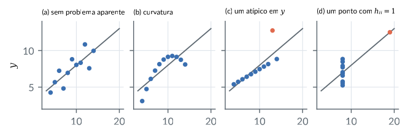
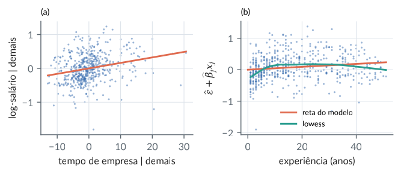
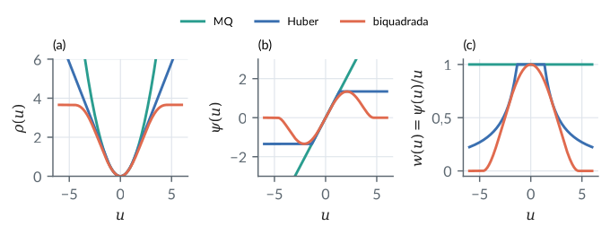
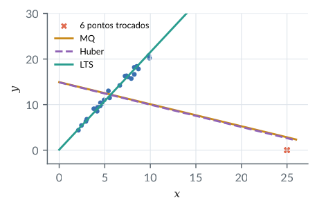
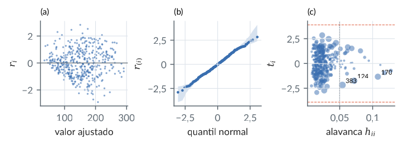
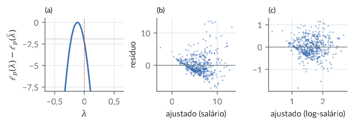
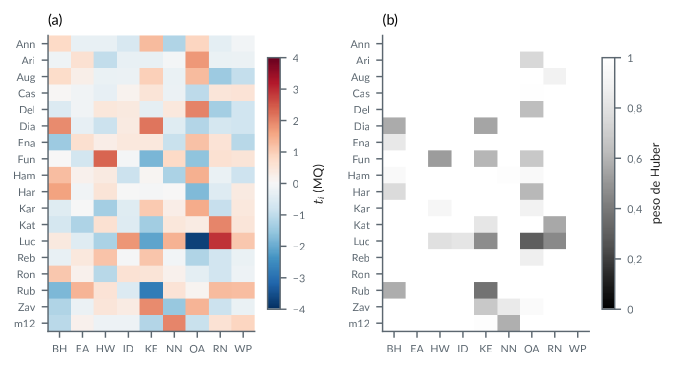
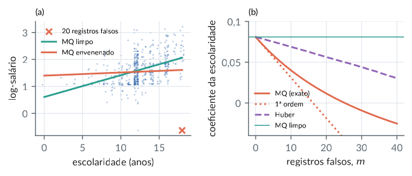
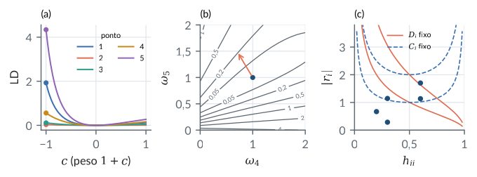

15. Diagnóstico e robustez
Material reprodutível do Capítulo 15 do livro.
Exemplos
Resíduos padronizados, studentizados e média deslocada
R/cap15/01_residuos.R
# Cap. 15: Resíduos padronizados, studentizados e média deslocada
source(file.path("R", "comum", "robusto.R"))
pr <- function(...) cat(sprintf(...), "\n", sep = "")
x <- c(-2, -1, 0, 1, 2); y <- c(1, 1, 2, 3, 8); n <- 5
X <- cbind(1, x)
d <- influencia(X, y)
pr("s2 %.4f", d$s2)
for (i in 1:n)
pr("i %d h %.2f e %5.2f r %6.3f t %6.3f s2(i) %.4f", i, d$h[i],
d$e[i], d$r[i], d$t[i], d$s2i[i])
# Média deslocada: acrescentar a coluna e_5 equivale a retirar o ponto
ei <- as.numeric(1:n == 5)
fa <- lm(y ~ x + ei); fd <- lm(y ~ x, subset = 1:4)
pr("gama %.4f = e5/(1-h55) %.4f", coef(fa)[3], d$e[5] / (1 - d$h[5]))
pr("t de gama %.4f; SQRes aumentado %.4f = sem o ponto %.4f",
summary(fa)$coef[3, 3], sum(resid(fa)^2), sum(resid(fd)^2))
pr("reta sem o ponto: %.2f + %.2f x; prevê %.2f em x = 2",
coef(fd)[1], coef(fd)[2], predict(fd, data.frame(x = 2)))
# t a partir de r e o teste de Bonferroni do maior |t|
nu <- n - 2
pr("t5 por r5: %.4f", d$r[5] * sqrt((nu - 1) / (nu - d$r[5]^2)))
p1 <- 2 * pt(-abs(d$t[5]), nu - 1)
pr("p marginal %.4f, Bonferroni %.4f, crit %.3f", p1,
min(1, n * p1), qt(1 - 0.05 / (2 * n), nu - 1))
# r_i^2/(n-r) ~ Beta(1/2, (n-r-1)/2): P(|r| > 1,7)
pr("P(|r5| > %.3f) = %.4f (igual ao p marginal de t)", d$r[5],
pbeta(d$r[5]^2 / nu, 1 / 2, (nu - 1) / 2, lower.tail = FALSE))Saída
s2 2.8000
i 1 h 0.60 e 1.20 r 1.134 t 1.225 s2(i) 2.4000
i 2 h 0.30 e -0.40 r -0.286 t -0.237 s2(i) 4.0857
i 3 h 0.20 e -1.00 r -0.668 t -0.591 s2(i) 3.5750
i 4 h 0.30 e -1.60 r -1.143 t -1.242 s2(i) 2.3714
i 5 h 0.60 e 1.80 r 1.701 t 7.348 s2(i) 0.1500
gama 4.5000 = e5/(1-h55) 4.5000
t de gama 7.3485; SQRes aumentado 0.3000 = sem o ponto 0.3000
reta sem o ponto: 2.10 + 0.70 x; prevê 3.50 em x = 2
t5 por r5: 7.3485
p marginal 0.0180, Bonferroni 0.0901, crit 9.925
P(|r5| > 1.701) = 0.0180 (igual ao p marginal de t)python/cap15/01_residuos.py
"""Cap. 15: Resíduos padronizados, studentizados e média deslocada."""
import sys
from pathlib import Path
import numpy as np
from scipy import stats
sys.path.insert(0, str(Path(__file__).resolve().parents[1]))
from comum.robusto import influencia, mq # noqa: E402
x = np.array([-2.0, -1, 0, 1, 2]); y = np.array([1.0, 1, 2, 3, 8])
n = 5
X = np.column_stack([np.ones(n), x])
d = influencia(X, y)
print(f"s2 {d['s2']:.4f}")
for i in range(n):
print(f"i {i + 1} h {d['h'][i]:.2f} e {d['e'][i]:5.2f}"
f" r {d['r'][i]:6.3f} t {d['t'][i]:6.3f}"
f" s2(i) {d['s2i'][i]:.4f}")
# Média deslocada: acrescentar a coluna e_5 equivale a retirar o ponto
ei = (np.arange(n) == 4).astype(float)
Xa = np.column_stack([X, ei]); ba = mq(Xa, y); ea = y - Xa @ ba
bd = mq(X[:4], y[:4]); ed = y[:4] - X[:4] @ bd
va = np.linalg.inv(Xa.T @ Xa)[2, 2] * (ea @ ea) / (n - 3)
print(f"gama {ba[2]:.4f} = e5/(1-h55)"
f" {d['e'][4] / (1 - d['h'][4]):.4f}")
print(f"t de gama {ba[2] / np.sqrt(va):.4f}; SQRes aumentado"
f" {ea @ ea:.4f} = sem o ponto {ed @ ed:.4f}")
print(f"reta sem o ponto: {bd[0]:.2f} + {bd[1]:.2f} x;"
f" prevê {bd[0] + 2 * bd[1]:.2f} em x = 2")
# t a partir de r e o teste de Bonferroni do maior |t|
nu = n - 2
r5 = d["r"][4]; t5 = d["t"][4]
print(f"t5 por r5: {r5 * np.sqrt((nu - 1) / (nu - r5**2)):.4f}")
p1 = 2 * stats.t.sf(abs(t5), nu - 1)
print(f"p marginal {p1:.4f}, Bonferroni {min(1, n * p1):.4f},"
f" crit {stats.t.ppf(1 - 0.05 / (2 * n), nu - 1):.3f}")
# r_i^2/(n-r) ~ Beta(1/2, (n-r-1)/2): P(|r| > 1,7)
print(f"P(|r5| > {r5:.3f}) ="
f" {stats.beta.sf(r5**2 / nu, 0.5, (nu - 1) / 2):.4f}"
" (igual ao p marginal de t)")Saída
s2 2.8000
i 1 h 0.60 e 1.20 r 1.134 t 1.225 s2(i) 2.4000
i 2 h 0.30 e -0.40 r -0.286 t -0.237 s2(i) 4.0857
i 3 h 0.20 e -1.00 r -0.668 t -0.591 s2(i) 3.5750
i 4 h 0.30 e -1.60 r -1.143 t -1.242 s2(i) 2.3714
i 5 h 0.60 e 1.80 r 1.701 t 7.348 s2(i) 0.1500
gama 4.5000 = e5/(1-h55) 4.5000
t de gama 7.3485; SQRes aumentado 0.3000 = sem o ponto 0.3000
reta sem o ponto: 2.10 + 0.70 x; prevê 3.50 em x = 2
t5 por r5: 7.3485
p marginal 0.0180, Bonferroni 0.0901, crit 9.925
P(|r5| > 1.701) = 0.0180 (igual ao p marginal de t)Medidas de influência e o mascaramento
R/cap15/02_influencia.R
# Cap. 15: Medidas de influência e o mascaramento
source(file.path("R", "comum", "robusto.R"))
pr <- function(...) cat(sprintf(...), "\n", sep = "")
x <- c(-2, -1, 0, 1, 2); y <- c(1, 1, 2, 3, 8); n <- 5; p <- 2
X <- cbind(1, x); G <- solve(crossprod(X))
b <- drop(G %*% crossprod(X, y)); d <- influencia(X, y)
b5 <- mq(X[1:4, ], y[1:4])
pr("DFBETA refeito (%.2f, %.2f); fórmula (%.2f, %.2f)",
(b - b5)[1], (b - b5)[2],
(G %*% X[5, ] * d$e[5] / (1 - d$h[5]))[1],
(G %*% X[5, ] * d$e[5] / (1 - d$h[5]))[2])
dif <- b - b5
pr("Cook: elipsoide %.4f, fórmula %.4f, F(2,3;0,5) %.4f",
drop(t(dif) %*% crossprod(X) %*% dif) / (p * d$s2), d$cook[5],
qf(0.5, p, n - p))
pr("Cook por ponto: %s",
paste(sprintf("%.3f", d$cook), collapse = " "))
pr("DFFITS5 %.3f; COVRATIO5 %.5f", d$dffits[5],
(d$s2i[5] / d$s2)^p / (1 - d$h[5]))
# Influência infinitesimal: derivada de b(w) no peso w5, em w = 1
bw <- function(w)
drop(solve(crossprod(X, w * X), crossprod(X, w * y)))
eps <- 1e-6; w <- rep(1, n); w2 <- w; w2[5] <- 1 + eps
pr("derivada numérica (%.3f, %.3f); G x5 e5 (%.3f, %.3f)",
((bw(w2) - bw(w)) / eps)[1], ((bw(w2) - bw(w)) / eps)[2],
(G %*% X[5, ] * d$e[5])[1], (G %*% X[5, ] * d$e[5])[2])
# Mascaramento: o ponto (2, 8) duplicado
x6 <- c(x, 2); y6 <- c(y, 8); X6 <- cbind(1, x6)
d6 <- influencia(X6, y6)
pr("com duplicata: t %s",
paste(sprintf("%.2f", d6$t), collapse = " "))
pr("Cook %s", paste(sprintf("%.3f", d6$cook), collapse = " "))
I <- 5:6; H <- X6 %*% solve(crossprod(X6), t(X6))
eI <- d6$e[I]; A <- diag(2) - H[I, I]
sq <- sum(d6$e^2) - drop(t(eI) %*% solve(A, eI))
FI <- drop(t(eI) %*% solve(A, eI)) / 2 / (sq / (6 - 2 - 2))
pr("grupo {5,6}: SQRes sem o par %.4f, F %.2f, p %.4f", sq, FI,
pf(FI, 2, 2, lower.tail = FALSE))
bI <- mq(X6[1:4, ], y6[1:4])
bG <- drop(solve(crossprod(X6)) %*% crossprod(X6, y6)) -
drop(solve(crossprod(X6)) %*% t(X6[I, ]) %*% solve(A, eI))
pr("b sem o par: refeito (%.2f, %.2f), fórmula (%.2f, %.2f)",
bI[1], bI[2], bG[1], bG[2])Saída
DFBETA refeito (0.90, 0.90); fórmula (0.90, 0.90)
Cook: elipsoide 2.1696, fórmula 2.1696, F(2,3;0,5) 0.8811
Cook por ponto: 0.964 0.017 0.056 0.280 2.170
DFFITS5 9.000; COVRATIO5 0.00717
derivada numérica (0.360, 0.360); G x5 e5 (0.360, 0.360)
com duplicata: t 1.59 -0.26 -0.80 -1.75 0.85 0.85
Cook 1.240 0.019 0.074 0.252 0.233 0.233
grupo {5,6}: SQRes sem o par 0.3000, F 33.75, p 0.0288
b sem o par: refeito (2.10, 0.70), fórmula (2.10, 0.70)python/cap15/02_influencia.py
"""Cap. 15: Medidas de influência e o mascaramento."""
import sys
from pathlib import Path
import numpy as np
from scipy import stats
sys.path.insert(0, str(Path(__file__).resolve().parents[1]))
from comum.robusto import influencia, mq # noqa: E402
x = np.array([-2.0, -1, 0, 1, 2]); y = np.array([1.0, 1, 2, 3, 8])
n, p = 5, 2
X = np.column_stack([np.ones(n), x]); G = np.linalg.inv(X.T @ X)
b = G @ X.T @ y; d = influencia(X, y)
b5 = mq(X[:4], y[:4]); f5 = G @ X[4] * d["e"][4] / (1 - d["h"][4])
print(f"DFBETA refeito ({(b - b5)[0]:.2f}, {(b - b5)[1]:.2f});"
f" fórmula ({f5[0]:.2f}, {f5[1]:.2f})")
dif = b - b5
print(f"Cook: elipsoide {dif @ X.T @ X @ dif / (p * d['s2']):.4f},"
f" fórmula {d['cook'][4]:.4f},"
f" F(2,3;0,5) {stats.f.ppf(0.5, p, n - p):.4f}")
print("Cook por ponto: " + " ".join(f"{c:.3f}" for c in d["cook"]))
print(f"DFFITS5 {d['dffits'][4]:.3f}; COVRATIO5"
f" {(d['s2i'][4] / d['s2'])**p / (1 - d['h'][4]):.5f}")
# Influência infinitesimal: derivada de b(w) no peso w5, em w = 1
def bw(w):
return np.linalg.solve(X.T @ (w[:, None] * X), X.T @ (w * y))
eps = 1e-6; w = np.ones(n); w2 = w.copy(); w2[4] += eps
dn = (bw(w2) - bw(w)) / eps; da = G @ X[4] * d["e"][4]
print(f"derivada numérica ({dn[0]:.3f}, {dn[1]:.3f});"
f" G x5 e5 ({da[0]:.3f}, {da[1]:.3f})")
# Mascaramento: o ponto (2, 8) duplicado
x6 = np.r_[x, 2]; y6 = np.r_[y, 8]
X6 = np.column_stack([np.ones(6), x6]); d6 = influencia(X6, y6)
print("com duplicata: t " + " ".join(f"{t:.2f}" for t in d6["t"]))
print("Cook " + " ".join(f"{c:.3f}" for c in d6["cook"]))
I = [4, 5]; G6 = np.linalg.inv(X6.T @ X6); H = X6 @ G6 @ X6.T
eI = d6["e"][I]; A = np.eye(2) - H[np.ix_(I, I)]
q = eI @ np.linalg.solve(A, eI); sq = d6["e"] @ d6["e"] - q
FI = q / 2 / (sq / (6 - 2 - 2))
print(f"grupo {{5,6}}: SQRes sem o par {sq:.4f}, F {FI:.2f},"
f" p {stats.f.sf(FI, 2, 2):.4f}")
bI = mq(X6[:4], y6[:4])
bG = G6 @ X6.T @ y6 - G6 @ X6[I].T @ np.linalg.solve(A, eI)
print(f"b sem o par: refeito ({bI[0]:.2f}, {bI[1]:.2f}),"
f" fórmula ({bG[0]:.2f}, {bG[1]:.2f})")Saída
DFBETA refeito (0.90, 0.90); fórmula (0.90, 0.90)
Cook: elipsoide 2.1696, fórmula 2.1696, F(2,3;0,5) 0.8811
Cook por ponto: 0.964 0.017 0.056 0.280 2.170
DFFITS5 9.000; COVRATIO5 0.00717
derivada numérica (0.360, 0.360); G x5 e5 (0.360, 0.360)
com duplicata: t 1.59 -0.26 -0.80 -1.75 0.85 0.85
Cook 1.240 0.019 0.074 0.252 0.233 0.233
grupo {5,6}: SQRes sem o par 0.3000, F 33.75, p 0.0288
b sem o par: refeito (2.10, 0.70), fórmula (2.10, 0.70)O quarteto de Anscombe: um ajuste, quatro diagnósticos
R/cap15/03_anscombe.R
# Cap. 15: O quarteto de Anscombe: um ajuste, quatro diagnósticos
source(file.path("R", "comum", "robusto.R"))
pr <- function(...) cat(sprintf(...), "\n", sep = "")
x <- c(10, 8, 13, 9, 11, 14, 6, 4, 12, 7, 5)
xs <- list(x, x, x, c(8, 8, 8, 8, 8, 8, 8, 19, 8, 8, 8))
ys <- list(c(8.04, 6.95, 7.58, 8.81, 8.33, 9.96, 7.24, 4.26, 10.84,
4.82, 5.68),
c(9.14, 8.14, 8.74, 8.77, 9.26, 8.1, 6.13, 3.1, 9.13, 7.26,
4.74),
c(7.46, 6.77, 12.74, 7.11, 7.81, 8.84, 6.08, 5.39, 8.15,
6.42, 5.73),
c(6.58, 5.76, 7.71, 8.84, 8.47, 7.04, 5.25, 12.5, 5.56,
7.91, 6.89))
for (k in 1:4) {
X <- cbind(1, xs[[k]]); y <- ys[[k]]
b <- mq(X, y); e <- y - X %*% b
R2 <- 1 - sum(e^2) / sum((y - mean(y))^2)
pr("conjunto %d: b0 %.2f b1 %.3f R2 %.3f s %.3f", k, b[1], b[2],
R2, sqrt(sum(e^2) / 9))
d <- influencia(X, y); ok <- d$h < 1 - 1e-9
i <- which.max(ifelse(ok, abs(d$t), -Inf))
j <- which.max(ifelse(ok, d$cook, -Inf))
pr(" max h %.3f (obs %d); max|t| %.2f; max Cook %.3f",
max(d$h), which.max(d$h), abs(d$t[i]), d$cook[j])
}
pr("Bonferroni (n = 11, 8 gl): %.3f", qt(1 - 0.05 / 22, 8))Saída
conjunto 1: b0 3.00 b1 0.500 R2 0.667 s 1.237
max h 0.318 (obs 8); max|t| 2.08; max Cook 0.489
conjunto 2: b0 3.00 b1 0.500 R2 0.666 s 1.237
max h 0.318 (obs 8); max|t| 2.24; max Cook 0.808
conjunto 3: b0 3.00 b1 0.500 R2 0.666 s 1.236
max h 0.318 (obs 8); max|t| 1203.54; max Cook 1.393
conjunto 4: b0 3.00 b1 0.500 R2 0.667 s 1.236
max h 1.000 (obs 8); max|t| 1.74; max Cook 0.137
Bonferroni (n = 11, 8 gl): 3.900python/cap15/03_anscombe.py
"""Cap. 15: O quarteto de Anscombe: um ajuste, quatro diagnósticos."""
import sys
from pathlib import Path
import numpy as np
from scipy import stats
sys.path.insert(0, str(Path(__file__).resolve().parents[1]))
from comum.robusto import influencia, mq # noqa: E402
x = [10, 8, 13, 9, 11, 14, 6, 4, 12, 7, 5]
xs = [x, x, x, [8, 8, 8, 8, 8, 8, 8, 19, 8, 8, 8]]
ys = [[8.04, 6.95, 7.58, 8.81, 8.33, 9.96, 7.24, 4.26, 10.84, 4.82,
5.68],
[9.14, 8.14, 8.74, 8.77, 9.26, 8.1, 6.13, 3.1, 9.13, 7.26,
4.74],
[7.46, 6.77, 12.74, 7.11, 7.81, 8.84, 6.08, 5.39, 8.15, 6.42,
5.73],
[6.58, 5.76, 7.71, 8.84, 8.47, 7.04, 5.25, 12.5, 5.56, 7.91,
6.89]]
np.seterr(divide="ignore", invalid="ignore")
for k in range(4):
X = np.column_stack([np.ones(11), xs[k]]); y = np.array(ys[k])
b = mq(X, y); e = y - X @ b
R2 = 1 - e @ e / np.sum((y - y.mean()) ** 2)
print(f"conjunto {k + 1}: b0 {b[0]:.2f} b1 {b[1]:.3f}"
f" R2 {R2:.3f} s {np.sqrt(e @ e / 9):.3f}")
d = influencia(X, y); ok = d["h"] < 1 - 1e-9
i = np.argmax(np.where(ok, np.abs(d["t"]), -np.inf))
j = np.argmax(np.where(ok, d["cook"], -np.inf))
print(f" max h {d['h'].max():.3f} (obs {np.argmax(d['h']) + 1});"
f" max|t| {abs(d['t'][i]):.2f};"
f" max Cook {d['cook'][j]:.3f}")
print(f"Bonferroni (n = 11, 8 gl):"
f" {stats.t.ppf(1 - 0.05 / 22, 8):.3f}")Saída
conjunto 1: b0 3.00 b1 0.500 R2 0.667 s 1.237
max h 0.318 (obs 8); max|t| 2.08; max Cook 0.489
conjunto 2: b0 3.00 b1 0.500 R2 0.666 s 1.237
max h 0.318 (obs 8); max|t| 2.24; max Cook 0.808
conjunto 3: b0 3.00 b1 0.500 R2 0.666 s 1.236
max h 0.318 (obs 8); max|t| 1203.54; max Cook 1.393
conjunto 4: b0 3.00 b1 0.500 R2 0.667 s 1.236
max h 1.000 (obs 8); max|t| 1.74; max Cook 0.137
Bonferroni (n = 11, 8 gl): 3.900Figura: anscombe
python/cap15/fig_cap15.py
def fig_anscombe():
x = [10, 8, 13, 9, 11, 14, 6, 4, 12, 7, 5]
xs = [x, x, x, [8, 8, 8, 8, 8, 8, 8, 19, 8, 8, 8]]
ys = [[8.04, 6.95, 7.58, 8.81, 8.33, 9.96, 7.24, 4.26, 10.84,
4.82, 5.68],
[9.14, 8.14, 8.74, 8.77, 9.26, 8.1, 6.13, 3.1, 9.13, 7.26,
4.74],
[7.46, 6.77, 12.74, 7.11, 7.81, 8.84, 6.08, 5.39, 8.15,
6.42, 5.73],
[6.58, 5.76, 7.71, 8.84, 8.47, 7.04, 5.25, 12.5, 5.56, 7.91,
6.89]]
rot = ["sem problema aparente", "curvatura", "um atípico em $y$",
"um ponto com $h_{ii}=1$"]
fig, axs = plt.subplots(1, 4, figsize=(LARG, 1.75), sharey=True)
xx = np.array([3, 20])
for k, ax in enumerate(axs):
xv = np.array(xs[k], float); yv = np.array(ys[k])
ax.plot(xx, 3 + 0.5 * xx, color=COR["cinza"], lw=1)
dest = {2: 2, 3: 7}.get(k)
cor = [CATEG[1] if i == dest else CATEG[0] for i in range(11)]
ax.scatter(xv, yv, s=10, c=cor, zorder=3)
ax.set_title(f"({'abcd'[k]}) {rot[k]}", loc="left",
fontsize=6.5)
ax.set_xlim(2, 21); ax.set_ylim(2, 14)
virgula(ax)
axs[0].set_ylabel("$y$")
fig.tight_layout(w_pad=0.4)
salvar(fig, CAP, "anscombe")Trecho de python/cap15/fig_cap15.py, que traz também as importações e o estilo.

Gráficos de regressão parcial e de resíduos parciais
R/cap15/04_parciais.R
# Cap. 15: Gráficos de regressão parcial e de resíduos parciais
pr <- function(...) cat(sprintf(...), "\n", sep = "")
w <- read.csv(file.path("dados", "wage1.csv"))
w$ly <- log(w$wage); n <- nrow(w)
m <- lm(ly ~ educ + exper + I(exper^2) + tenure + female, data = w)
# Regressão parcial (variável adicionada) de tenure
yt <- resid(lm(ly ~ educ + exper + I(exper^2) + female, data = w))
xt <- resid(lm(tenure ~ educ + exper + I(exper^2) + female, data = w))
ma <- lm(yt ~ xt)
pr("tenure: coef. no modelo %.5f; inclinação parcial %.5f",
coef(m)["tenure"], coef(ma)["xt"])
pr("resíduos iguais até 1e-12: %s",
if (max(abs(resid(ma) - resid(m))) < 1e-12) "sim" else "não")
ep <- summary(m)$coef["tenure", 2]; ea <- summary(ma)$coef["xt", 2]
pr("erro-padrão: modelo %.6f; parcial %.6f; corrigido %.6f", ep, ea,
ea * sqrt((n - 2) / (n - 6)))
# Resíduos parciais de exper no modelo sem o quadrado
m1 <- lm(ly ~ educ + exper + tenure + female, data = w)
rp <- resid(m1) + coef(m1)["exper"] * w$exper
pr("inclinação dos resíduos parciais %.5f = coef %.5f",
coef(lm(rp ~ w$exper))[2], coef(m1)["exper"])
mq2 <- summary(lm(rp ~ w$exper + I(w$exper^2)))$coef
pr("curvatura nos resíduos parciais: t do quadrado %.2f", mq2[3, 3])
pr("t do quadrado no modelo completo %.2f",
summary(m)$coef["I(exper^2)", 3])Saída
tenure: coef. no modelo 0.01621; inclinação parcial 0.01621
resíduos iguais até 1e-12: sim
erro-padrão: modelo 0.002881; parcial 0.002870; corrigido 0.002881
inclinação dos resíduos parciais 0.00463 = coef 0.00463
curvatura nos resíduos parciais: t do quadrado -6.11
t do quadrado no modelo completo -6.20python/cap15/04_parciais.py
"""Cap. 15: Gráficos de regressão parcial e de resíduos parciais."""
from pathlib import Path
import numpy as np
import pandas as pd
import statsmodels.api as sm
raiz = Path(__file__).resolve().parents[2]
w = pd.read_csv(raiz / "dados" / "wage1.csv")
ly = np.log(w.wage.to_numpy()); n = len(ly)
um = np.ones(n); ex = w.exper.to_numpy(float)
base = np.column_stack([um, w.educ, ex, ex**2, w.female])
X = np.column_stack([base, w.tenure])
m = sm.OLS(ly, X).fit()
# Regressão parcial (variável adicionada) de tenure
yt = sm.OLS(ly, base).fit().resid
xt = sm.OLS(w.tenure.to_numpy(float), base).fit().resid
ma = sm.OLS(yt, np.column_stack([um, xt])).fit()
print(f"tenure: coef. no modelo {m.params[5]:.5f};"
f" inclinação parcial {ma.params[1]:.5f}")
ok = np.abs(ma.resid - m.resid).max() < 1e-12
print(f"resíduos iguais até 1e-12: {'sim' if ok else 'não'}")
ep, ea = m.bse[5], ma.bse[1]
print(f"erro-padrão: modelo {ep:.6f}; parcial {ea:.6f};"
f" corrigido {ea * np.sqrt((n - 2) / (n - 6)):.6f}")
# Resíduos parciais de exper no modelo sem o quadrado
X1 = np.column_stack([um, w.educ, ex, w.tenure, w.female])
m1 = sm.OLS(ly, X1).fit()
rp = m1.resid + m1.params[2] * ex
inc = sm.OLS(rp, np.column_stack([um, ex])).fit().params[1]
print(f"inclinação dos resíduos parciais {inc:.5f}"
f" = coef {m1.params[2]:.5f}")
mq2 = sm.OLS(rp, np.column_stack([um, ex, ex**2])).fit()
print(f"curvatura nos resíduos parciais: t do quadrado"
f" {mq2.tvalues[2]:.2f}")
print(f"t do quadrado no modelo completo {m.tvalues[3]:.2f}")Saída
tenure: coef. no modelo 0.01621; inclinação parcial 0.01621
resíduos iguais até 1e-12: sim
erro-padrão: modelo 0.002881; parcial 0.002870; corrigido 0.002881
inclinação dos resíduos parciais 0.00463 = coef 0.00463
curvatura nos resíduos parciais: t do quadrado -6.11
t do quadrado no modelo completo -6.20Figura: parciais
python/cap15/fig_cap15.py
def fig_parciais():
w = pd.read_csv(DADOS / "wage1.csv")
ly = np.log(w.wage.to_numpy()); n = len(ly)
ex = w.exper.to_numpy(float); um = np.ones(n)
base = np.column_stack([um, w.educ, ex, ex**2, w.female])
yt = ly - base @ mq(base, ly)
ten = w.tenure.to_numpy(float); xt = ten - base @ mq(base, ten)
b = mq(np.column_stack([um, xt]), yt)
X1 = np.column_stack([um, w.educ, ex, w.tenure, w.female])
b1 = mq(X1, ly); rp = ly - X1 @ b1 + b1[2] * ex
lw = sm.nonparametric.lowess(rp, ex, frac=0.4)
fig, (a1, a2) = plt.subplots(1, 2, figsize=(LARG, 2.3))
a1.scatter(xt, yt, s=3, color=CATEG[0], alpha=0.5, lw=0)
g = np.linspace(xt.min(), xt.max(), 2)
a1.plot(g, b[0] + b[1] * g, color=CATEG[1])
a1.set_xlabel("tempo de empresa | demais")
a1.set_ylabel("log-salário | demais")
a2.scatter(ex, rp, s=3, color=CATEG[0], alpha=0.5, lw=0)
g = np.linspace(0, ex.max(), 2)
a2.plot(g, np.mean(rp - b1[2] * ex) + b1[2] * g, color=CATEG[1],
label="reta do modelo")
a2.plot(lw[:, 0], lw[:, 1], color=CATEG[2], label="lowess")
a2.set_xlabel("experiência (anos)")
a2.set_ylabel(r"$\widehat\varepsilon+\widehat\beta_j x_j$")
a2.legend(fontsize=7, loc="lower center")
titulo((a1, a2))
fig.tight_layout()
salvar(fig, CAP, "parciais")Trecho de python/cap15/fig_cap15.py, que traz também as importações e o estilo.

wage1. (a) Regressão parcial do tempo de empresa: log-salário e tempo de empresa, ambos livres de educação, experiência (e quadrado) e sexo; a reta tem a inclinação do coeficiente no modelo completo. (b) Resíduos parciais da experiência no modelo sem o termo quadrático: a curva suavizada (lowess) se afasta da reta do modelo e sugere o termo quadrático.O teste de Breusch-Pagan como teste do escore
R/cap15/05_breusch_pagan.R
# Cap. 15: O teste de Breusch-Pagan como teste do escore
source(file.path("R", "comum", "gerador.R"))
pr <- function(...) cat(sprintf(...), "\n", sep = "")
g <- gerador(2026); n <- 60
x <- 10 * g$unif(n); X <- cbind(1, x)
y <- 1 + 0.5 * x + (0.3 + 0.15 * x) * g$normal(n)
bp <- function(X, y, Z) {
e <- drop(y - X %*% qr.coef(qr(X), y)); s2 <- mean(e^2)
u <- e^2 / s2; f <- fitted(lm(u ~ Z - 1))
ese <- sum((f - mean(u))^2)
r2 <- ese / sum((u - mean(u))^2)
c(bp = ese / 2, koenker = length(y) * r2)
}
s <- bp(X, y, X)
pr("BP %.4f (p %.4f); Koenker %.4f (p %.4f)", s[1],
pchisq(s[1], 1, lower.tail = FALSE), s[2],
pchisq(s[2], 1, lower.tail = FALSE))
# O mesmo número pelo escore e pela informação, com duas funções h
b <- qr.coef(qr(X), y); e <- drop(y - X %*% b); s2 <- mean(e^2)
ll <- function(a, h) { v <- h(a[1] + a[2] * x)
-sum(log(v)) / 2 - sum(e^2 / v) / 2 }
for (caso in list(list("exp", exp, log(s2)), list("ident", identity,
s2))) {
h <- caso[[2]]; a0 <- c(caso[[3]], 0); eps <- 1e-6
sc <- sapply(1:2, function(k) { d <- c(0, 0); d[k] <- eps
(ll(a0 + d, h) - ll(a0 - d, h)) / (2 * eps) })
hp <- (h(a0[1] + eps) - h(a0[1] - eps)) / (2 * eps)
info <- hp^2 / (2 * s2^2) * crossprod(X)
pr("h = %s: escore (%s, %.4f); s'I^-1 s = %.4f", caso[[1]],
if (abs(sc[1]) < 1e-6) "0" else "?", sc[2],
drop(t(sc) %*% solve(info, sc)))
}
# Tamanho sob H0 com erros normais e com t de 5 gl (caudas pesadas)
rej <- matrix(0, 2, 2); N <- 2000
for (k in 1:N) {
z <- g$normal(n); v <- matrix(g$normal(5 * n), 5)
tt <- g$normal(n) / sqrt(colSums(v^2) / 5)
for (j in 1:2) {
yy <- 1 + 0.5 * x + if (j == 1) z else tt
rej[j, ] <- rej[j, ] + (bp(X, yy, X) > qchisq(0.95, 1))
}
}
pr("rejeição a 5%%: normal BP %.3f Koenker %.3f", rej[1, 1] / N,
rej[1, 2] / N)
pr(" t5 BP %.3f Koenker %.3f", rej[2, 1] / N,
rej[2, 2] / N)Saída
BP 3.3485 (p 0.0673); Koenker 4.8462 (p 0.0277)
h = exp: escore (0, 27.2417); s'I^-1 s = 3.3485
h = ident: escore (0, 29.5121); s'I^-1 s = 3.3485
rejeição a 5%: normal BP 0.042 Koenker 0.046
t5 BP 0.160 Koenker 0.043python/cap15/05_breusch_pagan.py
"""Cap. 15: O teste de Breusch-Pagan como teste do escore."""
import sys
from pathlib import Path
import numpy as np
from scipy import stats
sys.path.insert(0, str(Path(__file__).resolve().parents[1]))
from comum.gerador import Gerador # noqa: E402
g = Gerador(2026); n = 60
x = 10 * g.unif(n); X = np.column_stack([np.ones(n), x])
y = 1 + 0.5 * x + (0.3 + 0.15 * x) * g.normal(n)
def bp(X, y, Z):
e = y - X @ np.linalg.lstsq(X, y, rcond=None)[0]
s2 = np.mean(e**2); u = e**2 / s2
f = Z @ np.linalg.lstsq(Z, u, rcond=None)[0]
ese = np.sum((f - u.mean()) ** 2)
r2 = ese / np.sum((u - u.mean()) ** 2)
return np.array([ese / 2, len(y) * r2])
s = bp(X, y, X)
print(f"BP {s[0]:.4f} (p {stats.chi2.sf(s[0], 1):.4f});"
f" Koenker {s[1]:.4f} (p {stats.chi2.sf(s[1], 1):.4f})")
# O mesmo número pelo escore e pela informação, com duas funções h
b = np.linalg.lstsq(X, y, rcond=None)[0]; e = y - X @ b
s2 = np.mean(e**2)
def ll(a, h):
v = h(a[0] + a[1] * x)
return -np.sum(np.log(v)) / 2 - np.sum(e**2 / v) / 2
for nome, h, a00 in (("exp", np.exp, np.log(s2)),
("ident", lambda t: t, s2)):
a0 = np.array([a00, 0.0]); eps = 1e-6
sc = np.array([(ll(a0 + eps * np.eye(2)[k], h)
- ll(a0 - eps * np.eye(2)[k], h)) / (2 * eps)
for k in range(2)])
hp = (h(a0[0] + eps) - h(a0[0] - eps)) / (2 * eps)
info = hp**2 / (2 * s2**2) * X.T @ X
z0 = "0" if abs(sc[0]) < 1e-6 else "?"
print(f"h = {nome}: escore ({z0}, {sc[1]:.4f});"
f" s'I^-1 s = {sc @ np.linalg.solve(info, sc):.4f}")
# Tamanho sob H0 com erros normais e com t de 5 gl (caudas pesadas)
rej = np.zeros((2, 2)); N = 2000; c = stats.chi2.ppf(0.95, 1)
for k in range(N):
z = g.normal(n); v = g.normal(5 * n).reshape(n, 5)
tt = g.normal(n) / np.sqrt(np.sum(v**2, axis=1) / 5)
for j, eps_ in enumerate((z, tt)):
rej[j] += bp(X, 1 + 0.5 * x + eps_, X) > c
print(f"rejeição a 5%: normal BP {rej[0, 0] / N:.3f}"
f" Koenker {rej[0, 1] / N:.3f}")
print(f" t5 BP {rej[1, 0] / N:.3f}"
f" Koenker {rej[1, 1] / N:.3f}")Saída
BP 3.3485 (p 0.0673); Koenker 4.8462 (p 0.0277)
h = exp: escore (0, 27.2417); s'I^-1 s = 3.3485
h = ident: escore (0, 29.5121); s'I^-1 s = 3.3485
rejeição a 5%: normal BP 0.042 Koenker 0.046
t5 BP 0.160 Koenker 0.043Box-Cox pela verossimilhança perfilada
R/cap15/06_boxcox.R
# Cap. 15: Box-Cox pela verossimilhança perfilada
source(file.path("R", "comum", "robusto.R"))
pr <- function(...) cat(sprintf(...), "\n", sep = "")
x <- 1:6; y <- c(2, 3, 5, 8, 13, 21); n <- 6; X <- cbind(1, x)
sqr <- function(z) sum(lm.fit(X, z)$residuals^2)
bc <- function(y, l) if (abs(l) < 1e-12) log(y) else (y^l - 1) / l
gm <- exp(mean(log(y)))
# perfil pela Jacobiana e pela transformação normalizada
lp <- function(l) -n / 2 * log(sqr(bc(y, l)) / n) +
(l - 1) * sum(log(y))
lz <- function(l) -n / 2 * log(sqr(bc(y, l) / gm^(l - 1)) / n)
pr("perfil em 0,5: Jacobiana %.6f, normalizada %.6f", lp(0.5),
lz(0.5) + (0.5 - 1) * sum(log(y)) - (0.5 - 1) * n * log(gm))
grade <- seq(-2, 2, by = 0.001); v <- sapply(grade, lp)
lh <- grade[which.max(v)]; ic <- range(grade[v > max(v) - 1.92073])
pr("lambda chapéu %.3f; IC 95%% [%.3f, %.3f]", lh, ic[1], ic[2])
pr("RV: lambda = 0 %.3f; lambda = 1 %.3f", 2 * (max(v) - lp(0)),
2 * (max(v) - lp(1)))
# Sem a Jacobiana, SQRes também mede a escala de y^(lambda)
for (l in c(1, 0, -2, -4))
pr("lambda %2d: SQRes(y^(lambda)) %.5f; normalizada %.4f", l,
sqr(bc(y, l)), sqr(bc(y, l) / gm^(l - 1)))
pr("média geométrica %.4f", gm)
# Influência local dos pesos dos casos em lambda chapéu
f <- boxcox_influencia(X, y); dl <- f$delta
pr("lambda chapéu (escore nulo) %.4f; J %.1f; ep %.4f", f$lam, f$J,
1 / sqrt(f$J))
pr("delta %s; soma nula: %s",
paste(sprintf("%.2f", dl), collapse = " "),
if (abs(sum(dl)) < 1e-8) "sim" else "não")
pr("d lambda/d w %s", paste(sprintf("%.4f", f$dl), collapse = " "))
num <- sapply(1:n, function(i) (boxcox_lambda(X, y,
1 + 1e-6 * (1:n == i)) - f$lam) / 1e-6)
pr("dif. finitas %s", paste(sprintf("%.4f", num), collapse = " "))
lm <- dl / sqrt(sum(dl^2))
pr("C_max %.3f; l_max %s", 2 * sum(dl^2) / f$J,
paste(sprintf("%.3f", lm), collapse = " "))
sem <- sapply(1:n, function(i) boxcox_lambda(X[-i, ], y[-i]))
pr("lambda sem cada ponto %s", paste(sprintf("%.3f", sem),
collapse = " "))Saída
perfil em 0,5: Jacobiana 0.070895, normalizada 0.070895
lambda chapéu -0.041; IC 95% [-0.101, 0.019]
RV: lambda = 0 2.035; lambda = 1 35.486
lambda 1: SQRes(y^(lambda)) 27.27619; normalizada 27.2762
lambda 0: SQRes(y^(lambda)) 0.00256; normalizada 0.1034
lambda -2: SQRes(y^(lambda)) 0.00276; normalizada 180.7775
lambda -4: SQRes(y^(lambda)) 0.00008; normalizada 8801.0711
média geométrica 6.3493
lambda chapéu (escore nulo) -0.0407; J 1456.3; ep 0.0262
delta -22.07 -6.11 10.48 6.10 2.45 9.14; soma nula: sim
d lambda/d w -0.0152 -0.0042 0.0072 0.0042 0.0017 0.0063
dif. finitas -0.0152 -0.0042 0.0072 0.0042 0.0017 0.0063
C_max 1.046; l_max -0.800 -0.221 0.380 0.221 0.089 0.331
lambda sem cada ponto 0.029 -0.036 -0.053 -0.048 -0.043 -0.075python/cap15/06_boxcox.py
"""Cap. 15: Box-Cox pela verossimilhança perfilada."""
import sys
from pathlib import Path
import numpy as np
sys.path.insert(0, str(Path(__file__).resolve().parents[1]))
from comum.robusto import (boxcox_influencia, # noqa: E402
boxcox_lambda)
x = np.arange(1.0, 7); y = np.array([2.0, 3, 5, 8, 13, 21]); n = 6
X = np.column_stack([np.ones(n), x])
def sqr(z):
e = z - X @ np.linalg.lstsq(X, z, rcond=None)[0]
return e @ e
def bc(y, l):
return np.log(y) if abs(l) < 1e-12 else (y**l - 1) / l
gm = np.exp(np.mean(np.log(y)))
# perfil pela Jacobiana e pela transformação normalizada
def lp(l):
return (-n / 2 * np.log(sqr(bc(y, l)) / n)
+ (l - 1) * np.log(y).sum())
def lz(l):
return -n / 2 * np.log(sqr(bc(y, l) / gm ** (l - 1)) / n)
sl = np.log(y).sum()
print(f"perfil em 0,5: Jacobiana {lp(0.5):.6f}, normalizada"
f" {lz(0.5) + (0.5 - 1) * sl - (0.5 - 1) * n * np.log(gm):.6f}")
grade = np.round(np.arange(-2000, 2001) / 1000, 3)
v = np.array([lp(l) for l in grade])
lh = grade[np.argmax(v)]; dentro = grade[v > v.max() - 1.92073]
print(f"lambda chapéu {lh:.3f}; IC 95% [{dentro.min():.3f},"
f" {dentro.max():.3f}]")
print(f"RV: lambda = 0 {2 * (v.max() - lp(0)):.3f};"
f" lambda = 1 {2 * (v.max() - lp(1)):.3f}")
# Sem a Jacobiana, SQRes também mede a escala de y^(lambda)
for l in (1, 0, -2, -4):
print(f"lambda {l:2d}: SQRes(y^(lambda)) {sqr(bc(y, l)):.5f};"
f" normalizada {sqr(bc(y, l) / gm ** (l - 1)):.4f}")
print(f"média geométrica {gm:.4f}")
# Influência local dos pesos dos casos em lambda chapéu
f = boxcox_influencia(X, y); dl = f["delta"]
print(f"lambda chapéu (escore nulo) {f['lam']:.4f}; J {f['J']:.1f};"
f" ep {1 / np.sqrt(f['J']):.4f}")
print("delta " + " ".join(f"{v:.2f}" for v in dl)
+ f"; soma nula: {'sim' if abs(dl.sum()) < 1e-8 else 'não'}")
print("d lambda/d w " + " ".join(f"{v:.4f}" for v in f["dl"]))
num = [(boxcox_lambda(X, y, 1 + 1e-6 * (np.arange(n) == i))
- f["lam"]) / 1e-6 for i in range(n)]
print("dif. finitas " + " ".join(f"{v:.4f}" for v in num))
lm = dl / np.linalg.norm(dl)
print(f"C_max {2 * dl @ dl / f['J']:.3f}; l_max "
+ " ".join(f"{v:.3f}" for v in lm))
sem = [boxcox_lambda(np.delete(X, i, 0), np.delete(y, i))
for i in range(n)]
print("lambda sem cada ponto " + " ".join(f"{v:.3f}" for v in sem))Saída
perfil em 0,5: Jacobiana 0.070895, normalizada 0.070895
lambda chapéu -0.041; IC 95% [-0.101, 0.019]
RV: lambda = 0 2.035; lambda = 1 35.486
lambda 1: SQRes(y^(lambda)) 27.27619; normalizada 27.2762
lambda 0: SQRes(y^(lambda)) 0.00256; normalizada 0.1034
lambda -2: SQRes(y^(lambda)) 0.00276; normalizada 180.7775
lambda -4: SQRes(y^(lambda)) 0.00008; normalizada 8801.0711
média geométrica 6.3493
lambda chapéu (escore nulo) -0.0407; J 1456.3; ep 0.0262
delta -22.07 -6.11 10.48 6.10 2.45 9.14; soma nula: sim
d lambda/d w -0.0152 -0.0042 0.0072 0.0042 0.0017 0.0063
dif. finitas -0.0152 -0.0042 0.0072 0.0042 0.0017 0.0063
C_max 1.046; l_max -0.800 -0.221 0.380 0.221 0.089 0.331
lambda sem cada ponto 0.029 -0.036 -0.053 -0.048 -0.043 -0.075Índices de condição e decomposição da variância
R/cap15/07_belsley.R
# Cap. 15: Índices de condição e decomposição da variância
pr <- function(...) cat(sprintf(...), "\n", sep = "")
linhas <- function(M) for (k in seq_len(nrow(M)))
pr(" k = %d: %s", k,
paste(sprintf("%.4f", M[k, ]), collapse = " "))
belsley <- function(X) {
Xs <- sweep(X, 2, sqrt(colSums(X^2)), "/")
s <- svd(Xs); phi <- t(s$v^2) / s$d^2
list(eta = s$d[1] / s$d, pi = sweep(phi, 2, colSums(phi), "/"))
}
# Duas colunas de norma 1 com produto interno rho = 0,99
rho <- 0.99
X <- cbind(c(1, 0, 0), c(rho, sqrt(1 - rho^2), 0))
b <- belsley(X)
pr("rho 0,99: eta %s", paste(sprintf("%.3f", b$eta), collapse = " "))
pr("pi (linha = componente):")
linhas(b$pi)
pr("fórmulas: eta2 = %.3f, pi = %.4f", sqrt((1 + rho) / (1 - rho)),
(1 + rho) / 2)
# Colinearidade com o intercepto: x = 100, ..., 103
x <- 100:103; X2 <- cbind(1, x); b2 <- belsley(X2)
pr("intercepto e x = 100..103: eta %s",
paste(sprintf("%.1f", b2$eta), collapse = " "))
linhas(b2$pi)
xc <- x - mean(x); b3 <- belsley(cbind(1, xc))
pr("com x centrado: eta %s", paste(sprintf("%.1f", b3$eta),
collapse = " "))
pr("var(b1) relativa: sem centrar %.4f, centrado %.4f",
solve(crossprod(X2))[2, 2], solve(crossprod(cbind(1, xc)))[2, 2])Saída
rho 0,99: eta 1.000 14.107
pi (linha = componente):
k = 1: 0.0050 0.0050
k = 2: 0.9950 0.9950
fórmulas: eta2 = 14.107, pi = 0.9950
intercepto e x = 100..103: eta 1.0 181.6
k = 1: 0.0000 0.0000
k = 2: 1.0000 1.0000
com x centrado: eta 1.0 1.0
var(b1) relativa: sem centrar 0.2000, centrado 0.2000python/cap15/07_belsley.py
"""Cap. 15: Índices de condição e decomposição da variância."""
import numpy as np
def linhas(M):
for k, m in enumerate(M):
print(f" k = {k + 1}: " + " ".join(f"{v:.4f}" for v in m))
def belsley(X):
Xs = X / np.sqrt(np.sum(X**2, axis=0))
_, d, Vt = np.linalg.svd(Xs, full_matrices=False)
phi = Vt**2 / d[:, None] ** 2 # linha k, coluna j
return d[0] / d, phi / phi.sum(axis=0)
# Duas colunas de norma 1 com produto interno rho = 0,99
rho = 0.99
X = np.column_stack([[1, 0, 0], [rho, np.sqrt(1 - rho**2), 0]])
eta, pi = belsley(X)
print("rho 0,99: eta " + " ".join(f"{v:.3f}" for v in eta))
print("pi (linha = componente):")
linhas(pi)
print(f"fórmulas: eta2 = {np.sqrt((1 + rho) / (1 - rho)):.3f},"
f" pi = {(1 + rho) / 2:.4f}")
# Colinearidade com o intercepto: x = 100, ..., 103
x = np.arange(100.0, 104); X2 = np.column_stack([np.ones(4), x])
eta2, pi2 = belsley(X2)
print("intercepto e x = 100..103: eta "
+ " ".join(f"{v:.1f}" for v in eta2))
linhas(pi2)
xc = x - x.mean(); X3 = np.column_stack([np.ones(4), xc])
print("com x centrado: eta " + " ".join(f"{v:.1f}"
for v in belsley(X3)[0]))
print(f"var(b1) relativa: sem centrar"
f" {np.linalg.inv(X2.T @ X2)[1, 1]:.4f},"
f" centrado {np.linalg.inv(X3.T @ X3)[1, 1]:.4f}")Saída
rho 0,99: eta 1.000 14.107
pi (linha = componente):
k = 1: 0.0050 0.0050
k = 2: 0.9950 0.9950
fórmulas: eta2 = 14.107, pi = 0.9950
intercepto e x = 100..103: eta 1.0 181.6
k = 1: 0.0000 0.0000
k = 2: 1.0000 1.0000
com x centrado: eta 1.0 1.0
var(b1) relativa: sem centrar 0.2000, centrado 0.2000O estimador de Huber por mínimos quadrados repetidos
R/cap15/08_huber.R
# Cap. 15: O estimador de Huber por mínimos quadrados repetidos
source(file.path("R", "comum", "gerador.R"))
source(file.path("R", "comum", "robusto.R"))
pr <- function(...) cat(sprintf(...), "\n", sep = "")
g <- gerador(1515); n <- 30
x <- 10 * g$unif(n); y <- 1 + 2 * x + 0.5 * g$normal(n)
y[c(3, 11, 25)] <- y[c(3, 11, 25)] + 10 # três atípicos em y
X <- cbind(1, x); k <- 1.345
b0 <- mq(X, y); pr("MQ: %.4f %.4f", b0[1], b0[2])
# Escala fixa (MAD dos resíduos de MQ): o objetivo nunca sobe
s <- median(abs(y - X %*% b0)) / 0.6745; pr("escala fixa %.4f", s)
obj <- function(b) sum(rho_huber((y - X %*% b) / s, k))
b <- b0; v <- obj(b)
for (it in 1:6) {
u <- abs(drop(y - X %*% b)) / s; w <- ifelse(u <= k, 1, k / u)
b <- mq(X * sqrt(w), y * sqrt(w)); v <- c(v, obj(b))
}
pr("objetivo: %s", paste(sprintf("%.4f", v), collapse = " "))
hf <- huber(X, y, k, escala = s)
psi <- pmax(-k, pmin(k, drop(y - X %*% hf$coef) / s))
zero <- if (max(abs(crossprod(X, psi))) < 1e-8) "sim" else "não"
pr("Huber (escala fixa): %.4f %.4f; X'psi = 0: %s", hf$coef[1],
hf$coef[2], zero)
pr("pesos < 1: %s", paste(which(hf$pesos < 1), collapse = " "))
# Escala MAD reestimada, como MASS::rlm
hm <- huber(X, y, k); rl <- MASS::rlm(y ~ x, k = k)
pr("Huber (MAD): %.4f %.4f; rlm %.3f %.3f", hm$coef[1], hm$coef[2],
coef(rl)[1], coef(rl)[2])
# Eficiência assintótica no modelo normal
efi <- function(k) { a <- 2 * pnorm(k) - 1
a^2 / (a - 2 * k * dnorm(k) + 2 * k^2 * pnorm(-k)) }
pr("eficiência: k = 1 %.4f; k = 1,345 %.4f; k = 2 %.4f", efi(1),
efi(1.345), efi(2))
# Um atípico de alavanca: x = 30, y = 0
Xl <- rbind(X, c(1, 30)); yl <- c(y, 0)
pr("com ponto de alavanca: MQ inclinação %.4f; Huber %.4f",
mq(Xl, yl)[2], huber(Xl, yl, k)$coef[2])Saída
MQ: 1.8568 2.0179
escala fixa 1.6065
objetivo: 24.6790 22.1623 22.1602 22.1602 22.1602 22.1602 22.1602
Huber (escala fixa): 1.3001 1.9909; X'psi = 0: sim
pesos < 1: 3 11 25
Huber (MAD): 1.1964 1.9890; rlm 1.196 1.989
eficiência: k = 1 0.9031; k = 1,345 0.9500; k = 2 0.9897
com ponto de alavanca: MQ inclinação 0.2546; Huber 1.8205python/cap15/08_huber.py
"""Cap. 15: O estimador de Huber por mínimos quadrados repetidos."""
import sys
from pathlib import Path
import numpy as np
import statsmodels.api as sm
from scipy import stats
sys.path.insert(0, str(Path(__file__).resolve().parents[1]))
from comum.gerador import Gerador # noqa: E402
from comum.robusto import huber, mq, rho_huber # noqa: E402
g = Gerador(1515); n = 30
x = 10 * g.unif(n); y = 1 + 2 * x + 0.5 * g.normal(n)
y[[2, 10, 24]] += 10 # três atípicos em y
X = np.column_stack([np.ones(n), x]); k = 1.345
b0 = mq(X, y); print(f"MQ: {b0[0]:.4f} {b0[1]:.4f}")
# Escala fixa (MAD dos resíduos de MQ): o objetivo nunca sobe
s = np.median(np.abs(y - X @ b0)) / 0.6745
print(f"escala fixa {s:.4f}")
def obj(b):
return np.sum(rho_huber((y - X @ b) / s, k))
b = b0; v = [obj(b)]
for it in range(6):
u = np.abs(y - X @ b) / s; w = np.where(u <= k, 1, k / u)
b = mq(X * np.sqrt(w)[:, None], y * np.sqrt(w)); v.append(obj(b))
print("objetivo: " + " ".join(f"{t:.4f}" for t in v))
hf = huber(X, y, k, escala=s)
psi = np.clip((y - X @ hf["coef"]) / s, -k, k)
zero = "sim" if np.abs(X.T @ psi).max() < 1e-8 else "não"
print(f"Huber (escala fixa): {hf['coef'][0]:.4f} {hf['coef'][1]:.4f};"
f" X'psi = 0: {zero}")
print("pesos < 1: " + " ".join(str(i + 1)
for i in np.where(hf["pesos"] < 1)[0]))
# Escala MAD reestimada, como statsmodels RLM
hm = huber(X, y, k)
rl = sm.RLM(y, X, M=sm.robust.norms.HuberT(t=k)).fit(tol=1e-12)
print(f"Huber (MAD): {hm['coef'][0]:.4f} {hm['coef'][1]:.4f};"
f" rlm {rl.params[0]:.3f} {rl.params[1]:.3f}")
# Eficiência assintótica no modelo normal
def efi(k):
a = 2 * stats.norm.cdf(k) - 1
return a**2 / (a - 2 * k * stats.norm.pdf(k)
+ 2 * k**2 * stats.norm.cdf(-k))
print(f"eficiência: k = 1 {efi(1):.4f}; k = 1,345 {efi(1.345):.4f};"
f" k = 2 {efi(2):.4f}")
# Um atípico de alavanca: x = 30, y = 0
Xl = np.vstack([X, [1, 30]]); yl = np.r_[y, 0]
print(f"com ponto de alavanca: MQ inclinação {mq(Xl, yl)[1]:.4f};"
f" Huber {huber(Xl, yl, k)['coef'][1]:.4f}")Saída
MQ: 1.8568 2.0179
escala fixa 1.6065
objetivo: 24.6790 22.1623 22.1602 22.1602 22.1602 22.1602 22.1602
Huber (escala fixa): 1.3001 1.9909; X'psi = 0: sim
pesos < 1: 3 11 25
Huber (MAD): 1.1964 1.9890; rlm 1.196 1.989
eficiência: k = 1 0.9031; k = 1,345 0.9500; k = 2 0.9897
com ponto de alavanca: MQ inclinação 0.2546; Huber 1.8205Figura: rho psi
python/cap15/fig_cap15.py
def fig_rho_psi():
u = np.linspace(-6, 6, 601); k = 1.345; c = 4.685
rh = np.where(np.abs(u) <= k, u**2 / 2, k * np.abs(u) - k**2 / 2)
ph = np.clip(u, -k, k)
bis = np.where(np.abs(u) <= c, (1 - (u / c) ** 2) ** 2, 0)
rb = c**2 / 6 * np.where(np.abs(u) <= c,
1 - (1 - (u / c) ** 2) ** 3, 1)
pb = u * bis
fig, axs = plt.subplots(1, 3, figsize=(LARG, 1.85))
for (r, s, wv), cor, nm in (
((u**2 / 2, u, np.ones_like(u)), CATEG[2], "MQ"),
((rh, ph, ph / np.where(u == 0, 1, u)), CATEG[0],
"Huber"),
((rb, pb, bis), CATEG[1], "biquadrada")):
wv = np.where(u == 0, 1, wv)
axs[0].plot(u, r, color=cor, label=nm)
axs[1].plot(u, s, color=cor)
axs[2].plot(u, wv, color=cor)
axs[0].set_ylim(0, 6); axs[1].set_ylim(-3, 3)
axs[0].set_ylabel(r"$\rho(u)$"); axs[1].set_ylabel(r"$\psi(u)$")
axs[2].set_ylabel(r"$w(u)=\psi(u)/u$")
fig.legend(*axs[0].get_legend_handles_labels(), fontsize=7,
loc="upper center", ncol=3, bbox_to_anchor=(0.5, 1.08))
for a in axs:
a.set_xlabel("$u$")
titulo(axs)
fig.tight_layout(w_pad=0.6)
salvar(fig, CAP, "rho_psi")Trecho de python/cap15/fig_cap15.py, que traz também as importações e o estilo.

Mínimos quadrados aparados e o ponto de ruptura
R/cap15/09_lts.R
# Cap. 15: Mínimos quadrados aparados e o ponto de ruptura
source(file.path("R", "comum", "gerador.R"))
source(file.path("R", "comum", "robusto.R"))
pr <- function(...) cat(sprintf(...), "\n", sep = "")
g <- gerador(1515); n <- 30; p <- 2
x <- 10 * g$unif(n); y <- 1 + 2 * x + 0.5 * g$normal(n)
X <- cbind(1, x); h <- floor((n + p + 1) / 2)
pr("n %d, h %d, ruptura garantida: %d pontos", n, h,
min(n - h, h - p))
# Passos C a partir da reta y = 0: o objetivo nunca sobe
b <- c(0, 0); v <- obj_lts(X, y, b, h)
for (it in 1:4) {
b <- passo_c(X, y, b, h); v <- c(v, obj_lts(X, y, b, h))
}
pr("objetivo LTS: %s", paste(sprintf("%.3f", v), collapse = " "))
# Substituir m pontos por (x, y) = (25, 0): quem resiste?
ruim <- order(x)[1:15] # troca os de menor x
for (m in c(0, 1, 3, 6, 10, 11)) {
Xm <- X; ym <- y; i <- ruim[seq_len(m)]
Xm[i, 2] <- 25; ym[i] <- 0
bl <- lts(Xm, ym, h, gerador(7), ninicio = 300)$coef
pr("m %2d: inclinação MQ %6.3f Huber %6.3f LTS %6.3f", m,
mq(Xm, ym)[2], huber(Xm, ym)$coef[2], bl[2])
}
# Limitado, mas não imune: 10 pontos em (25, 10^6)
Xm <- X; ym <- y; i <- ruim[1:10]; Xm[i, 2] <- 25; ym[i] <- 1e6
pr("y = 10^6: inclinação MQ %.0f; LTS %.3f", mq(Xm, ym)[2],
lts(Xm, ym, h, gerador(7), ninicio = 300)$coef[2])Saída
n 30, h 16, ruptura garantida: 14 pontos
objetivo LTS: 751.401 1.216 1.207 1.207 1.207
m 0: inclinação MQ 1.995 Huber 1.994 LTS 1.938
m 1: inclinação MQ 0.398 Huber 1.900 LTS 2.180
m 3: inclinação MQ -0.206 Huber -0.206 LTS 2.112
m 6: inclinação MQ -0.484 Huber -0.490 LTS 2.141
m 10: inclinação MQ -0.682 Huber -0.675 LTS 1.964
m 11: inclinação MQ -0.713 Huber -0.709 LTS -0.934
y = 10^6: inclinação MQ 52570; LTS 1.964python/cap15/09_lts.py
"""Cap. 15: Mínimos quadrados aparados e o ponto de ruptura."""
import sys
from pathlib import Path
import numpy as np
sys.path.insert(0, str(Path(__file__).resolve().parents[1]))
from comum.gerador import Gerador # noqa: E402
from comum.robusto import ( # noqa: E402
huber, lts, mq, obj_lts, passo_c)
g = Gerador(1515); n, p = 30, 2
x = 10 * g.unif(n); y = 1 + 2 * x + 0.5 * g.normal(n)
X = np.column_stack([np.ones(n), x]); h = (n + p + 1) // 2
print(f"n {n}, h {h}, ruptura garantida: {min(n - h, h - p)} pontos")
# Passos C a partir da reta y = 0: o objetivo nunca sobe
b = np.zeros(2); v = [obj_lts(X, y, b, h)]
for it in range(4):
b = passo_c(X, y, b, h); v.append(obj_lts(X, y, b, h))
print("objetivo LTS: " + " ".join(f"{t:.3f}" for t in v))
# Substituir m pontos por (x, y) = (25, 0): quem resiste?
ruim = np.argsort(x, kind="stable")[:15] # troca os de menor x
for m in (0, 1, 3, 6, 10, 11):
Xm = X.copy(); ym = y.copy(); i = ruim[:m]
Xm[i, 1] = 25; ym[i] = 0
bl = lts(Xm, ym, h, Gerador(7), ninicio=300)["coef"]
bh = huber(Xm, ym)["coef"]
print(f"m {m:2d}: inclinação MQ {mq(Xm, ym)[1]:6.3f}"
f" Huber {bh[1]:6.3f} LTS {bl[1]:6.3f}")
# Limitado, mas não imune: 10 pontos em (25, 10^6)
Xm = X.copy(); ym = y.copy(); i = ruim[:10]
Xm[i, 1] = 25; ym[i] = 1e6
bl = lts(Xm, ym, h, Gerador(7), ninicio=300)["coef"]
print(f"y = 10^6: inclinação MQ {mq(Xm, ym)[1]:.0f}; LTS {bl[1]:.3f}")Saída
n 30, h 16, ruptura garantida: 14 pontos
objetivo LTS: 751.401 1.216 1.207 1.207 1.207
m 0: inclinação MQ 1.995 Huber 1.994 LTS 1.938
m 1: inclinação MQ 0.398 Huber 1.900 LTS 2.180
m 3: inclinação MQ -0.206 Huber -0.206 LTS 2.112
m 6: inclinação MQ -0.484 Huber -0.490 LTS 2.141
m 10: inclinação MQ -0.682 Huber -0.675 LTS 1.964
m 11: inclinação MQ -0.713 Huber -0.709 LTS -0.934
y = 10^6: inclinação MQ 52570; LTS 1.964Figura: ruptura
python/cap15/fig_cap15.py
def fig_ruptura():
g = Gerador(1515); n, p = 30, 2
x = 10 * g.unif(n); y = 1 + 2 * x + 0.5 * g.normal(n)
X = np.column_stack([np.ones(n), x]); h = (n + p + 1) // 2
i = np.argsort(x, kind="stable")[:6]
X[i, 1] = 25; y[i] = 0; x = X[:, 1]
fig, ax = plt.subplots(figsize=(3.6, 2.4))
ax.scatter(np.delete(x, i), np.delete(y, i), s=8, color=CATEG[0])
ax.scatter(x[i], y[i], s=14, color=CATEG[1], marker="x",
label="6 pontos trocados")
gg = np.linspace(0, 26, 2)
for b, cor, nm, ls in (
(mq(X, y), CATEG[3], "MQ", "-"),
(huber(X, y)["coef"], CATEG[4], "Huber", "--"),
(lts(X, y, h, Gerador(7), ninicio=300)["coef"], CATEG[2],
"LTS", "-")):
ax.plot(gg, b[0] + b[1] * gg, color=cor, ls=ls, label=nm)
ax.set_ylim(-3, 30)
ax.set_xlabel("$x$"); ax.set_ylabel("$y$")
ax.legend(fontsize=7, loc="upper left")
virgula(ax)
fig.tight_layout()
salvar(fig, CAP, "ruptura")Trecho de python/cap15/fig_cap15.py, que traz também as importações e o estilo.

Diabetes: resíduos, alavancas e pacientes influentes
R/cap15/10_diabetes_influencia.R
# Cap. 15: Diabetes: resíduos, alavancas e pacientes influentes
source(file.path("R", "comum", "gerador.R"))
source(file.path("R", "comum", "robusto.R"))
pr <- function(...) cat(sprintf(...), "\n", sep = "")
d <- read.csv(file.path("dados", "diabetes.csv"))
y <- d$y; X <- cbind(1, as.matrix(d[, 1:10])); n <- nrow(X); p <- 11
f <- influencia(X, y)
pr("n %d, p %d, s %.2f", n, p, sqrt(f$s2))
pr("max h %.4f (paciente %d); h > 2p/n: %d", max(f$h),
which.max(f$h), sum(f$h > 2 * p / n))
i <- which.max(abs(f$t)); pt1 <- 2 * pt(-abs(f$t[i]), n - p - 1)
pr("max|t| %.3f (paciente %d); p Bonferroni %.3f; limiar %.3f",
abs(f$t[i]), i, min(1, n * pt1), qt(1 - 0.025 / n, n - p - 1))
pr("|t| > 2: %d (esperado sob o modelo: %.1f)", sum(abs(f$t) > 2),
n * 2 * pt(-2, n - p - 1))
o <- order(-f$cook)[1:5]
for (j in o) pr("Cook %.4f paciente %3d h %.3f t %6.2f",
f$cook[j], j, f$h[j], f$t[j])
pr("F(p, n-p; 0,5) = %.3f; 4/n = %.4f", qf(0.5, p, n - p), 4 / n)
j <- which.max(f$h)
pr("maior alavanca: Cook %.4f, t %.2f", f$cook[j], f$t[j])
# DFBETAS: mudança de cada coeficiente, em erros-padrão
G <- solve(crossprod(X)); se <- sqrt(diag(G))
dfb <- t(G %*% t(X) %*% diag(f$e / (1 - f$h))) /
outer(sqrt(f$s2i), se)
k <- which(abs(dfb) == max(abs(dfb)), arr.ind = TRUE)
pr("max|DFBETAS| %.3f (paciente %d, coef. %s); 2/sqrt(n) %.3f",
max(abs(dfb)), k[1], colnames(X)[k[2]], 2 / sqrt(n))
pr("|DFBETAS| > 2/sqrt(n): %d de %d", sum(abs(dfb) > 2 / sqrt(n)),
n * p)
# Retirar os cinco de maior Cook: quanto mudam os coeficientes?
b <- mq(X, y); b5 <- mq(X[-o, ], y[-o])
z <- (b5 - b) / (sqrt(f$s2) * se)
pr("sem os 5: maior mudança %.2f erros-padrão (%s)", max(abs(z)),
colnames(X)[which.max(abs(z))])
# Envelope simulado dos resíduos padronizados (99 réplicas)
Q <- base_col(X)$Q; g <- gerador(15); N <- 99
R <- sapply(1:N, function(k) { z <- g$normal(n)
e <- z - Q %*% crossprod(Q, z)
sort(e / sqrt(sum(e^2) / (n - p) * (1 - f$h))) })
lim <- apply(R, 1, range); ro <- sort(f$r)
pr("fora do envelope: %d de %d", sum(ro < lim[1, ] | ro > lim[2, ]),
n)
# Variância: Koenker (n R^2 de e^2 nas covariáveis)
u <- f$e^2; ru <- u - X %*% mq(X, u)
k2 <- n * (1 - sum(ru^2) / sum((u - mean(u))^2))
pr("Koenker %.2f, gl %d, p %.4f", k2, p - 1,
pchisq(k2, p - 1, lower.tail = FALSE))
# Influência local (pesos dos casos): curvaturas e direção máxima
cl <- curvatura_local(X, y)
pr("curvaturas principais:")
pr(" %s", paste(sprintf("%.3f", cl$curv[1:6]), collapse = " "))
pr(" %s", paste(sprintf("%.3f", cl$curv[7:p]), collapse = " "))
pr("soma %.2f; B_max %.3f; 1/sqrt(p) %.3f", sum(cl$curv), cl$Bmax,
1 / sqrt(p))
oc <- order(-cl$C)
pr("maiores C_i: %s; C_i %s", paste(oc[1:5], collapse = " "),
paste(sprintf("%.3f", cl$C[oc[1:5]]), collapse = " "))
j <- o[3]
pr("3o maior Cook (paciente %d): C_i %.3f, %do maior", j, cl$C[j],
which(oc == j))
l <- cl$lmax; ol <- order(-abs(l))
pr("l_max, maiores |l|: %s", paste(ol[1:5], collapse = " "))
pr("massa: 5 maiores %.3f; 20 maiores %.3f; número efetivo %.1f",
sum(l[ol[1:5]]^2), sum(l[ol[1:20]]^2), 1 / sum(l^4))Saída
n 442, p 11, s 54.15
max h 0.1276 (paciente 323); h > 2p/n: 26
max|t| 2.925 (paciente 57); p Bonferroni 1.000; limiar 3.897
|t| > 2: 18 (esperado sob o modelo: 20.4)
Cook 0.0245 paciente 383 h 0.054 t -2.18
Cook 0.0213 paciente 124 h 0.072 t -1.74
Cook 0.0196 paciente 170 h 0.108 t -1.33
Cook 0.0189 paciente 305 h 0.033 t 2.47
Cook 0.0181 paciente 93 h 0.027 t -2.73
F(p, n-p; 0,5) = 0.942; 4/n = 0.0090
maior alavanca: Cook 0.0072, t -0.74
max|DFBETAS| 0.373 (paciente 170, coef. s2); 2/sqrt(n) 0.095
|DFBETAS| > 2/sqrt(n): 250 de 4862
sem os 5: maior mudança 0.52 erros-padrão (s2)
fora do envelope: 0 de 442
Koenker 26.15, gl 10, p 0.0035
curvaturas principais:
2.730 2.429 2.325 2.131 1.987 1.765
1.653 1.590 1.584 1.267 0.898
soma 20.36; B_max 0.429; 1/sqrt(p) 0.302
maiores C_i: 383 124 305 93 103; C_i 0.482 0.404 0.389 0.378 0.366
3o maior Cook (paciente 170): C_i 0.342, 7o maior
l_max, maiores |l|: 103 57 383 10 305
massa: 5 maiores 0.254; 20 maiores 0.604; número efetivo 40.3python/cap15/10_diabetes_influencia.py
"""Cap. 15: Diabetes: resíduos, alavancas e pacientes influentes."""
import sys
from pathlib import Path
import numpy as np
import pandas as pd
from scipy import stats
sys.path.insert(0, str(Path(__file__).resolve().parents[1]))
from comum.gerador import Gerador # noqa: E402
from comum.robusto import (base_col, curvatura_local, # noqa: E402
influencia, mq)
raiz = Path(__file__).resolve().parents[2]
d = pd.read_csv(raiz / "dados" / "diabetes.csv")
y = d.y.to_numpy(float)
nomes = ["(Intercept)"] + list(d.columns[:10])
X = np.column_stack([np.ones(len(d)), d.iloc[:, :10].to_numpy(float)])
n, p = X.shape
f = influencia(X, y)
print(f"n {n}, p {p}, s {np.sqrt(f['s2']):.2f}")
print(f"max h {f['h'].max():.4f} (paciente {np.argmax(f['h']) + 1});"
f" h > 2p/n: {np.sum(f['h'] > 2 * p / n)}")
i = np.argmax(np.abs(f["t"]))
pt1 = 2 * stats.t.sf(abs(f["t"][i]), n - p - 1)
print(f"max|t| {abs(f['t'][i]):.3f} (paciente {i + 1});"
f" p Bonferroni {min(1, n * pt1):.3f};"
f" limiar {stats.t.ppf(1 - 0.025 / n, n - p - 1):.3f}")
print(f"|t| > 2: {np.sum(np.abs(f['t']) > 2)} (esperado sob o modelo:"
f" {n * 2 * stats.t.sf(2, n - p - 1):.1f})")
o = np.argsort(-f["cook"], kind="stable")[:5]
for j in o:
print(f"Cook {f['cook'][j]:.4f} paciente {j + 1:3d}"
f" h {f['h'][j]:.3f} t {f['t'][j]:6.2f}")
print(f"F(p, n-p; 0,5) = {stats.f.ppf(0.5, p, n - p):.3f};"
f" 4/n = {4 / n:.4f}")
j = np.argmax(f["h"])
print(f"maior alavanca: Cook {f['cook'][j]:.4f}, t {f['t'][j]:.2f}")
# DFBETAS: mudança de cada coeficiente, em erros-padrão
G = np.linalg.inv(X.T @ X); se = np.sqrt(np.diag(G))
dfb = (X @ G) * (f["e"] / (1 - f["h"]))[:, None]
dfb = dfb / np.outer(np.sqrt(f["s2i"]), se)
k = np.unravel_index(np.argmax(np.abs(dfb)), dfb.shape)
print(f"max|DFBETAS| {np.abs(dfb).max():.3f} (paciente {k[0] + 1},"
f" coef. {nomes[k[1]]}); 2/sqrt(n) {2 / np.sqrt(n):.3f}")
print(f"|DFBETAS| > 2/sqrt(n): {np.sum(np.abs(dfb) > 2 / np.sqrt(n))}"
f" de {n * p}")
# Retirar os cinco de maior Cook: quanto mudam os coeficientes?
b = mq(X, y); keep = np.setdiff1d(np.arange(n), o)
z = (mq(X[keep], y[keep]) - b) / (np.sqrt(f["s2"]) * se)
print(f"sem os 5: maior mudança {np.abs(z).max():.2f} erros-padrão"
f" ({nomes[np.argmax(np.abs(z))]})")
# Envelope simulado dos resíduos padronizados (99 réplicas)
Q, _ = base_col(X); g = Gerador(15); N = 99
R = np.empty((n, N))
for k in range(N):
zz = g.normal(n); e = zz - Q @ (Q.T @ zz)
R[:, k] = np.sort(e / np.sqrt(e @ e / (n - p) * (1 - f["h"])))
lo, hi = R.min(axis=1), R.max(axis=1); ro = np.sort(f["r"])
print(f"fora do envelope: {np.sum((ro < lo) | (ro > hi))} de {n}")
# Variância: Koenker (n R^2 de e^2 nas covariáveis)
u = f["e"] ** 2; ru = u - X @ mq(X, u)
k2 = n * (1 - ru @ ru / np.sum((u - u.mean()) ** 2))
print(f"Koenker {k2:.2f}, gl {p - 1},"
f" p {stats.chi2.sf(k2, p - 1):.4f}")
# Influência local (pesos dos casos): curvaturas e direção máxima
c = curvatura_local(X, y)
print("curvaturas principais:")
print(" " + " ".join(f"{v:.3f}" for v in c["curv"][:6]))
print(" " + " ".join(f"{v:.3f}" for v in c["curv"][6:]))
print(f"soma {c['curv'].sum():.2f}; B_max {c['Bmax']:.3f};"
f" 1/sqrt(p) {1 / np.sqrt(p):.3f}")
oc = np.argsort(-c["C"], kind="stable")
print("maiores C_i: " + " ".join(f"{j + 1}" for j in oc[:5])
+ "; C_i " + " ".join(f"{c['C'][j]:.3f}" for j in oc[:5]))
j = o[2]; pos = int(np.where(oc == j)[0][0]) + 1
print(f"3o maior Cook (paciente {j + 1}): C_i {c['C'][j]:.3f},"
f" {pos}o maior")
l = c["lmax"]; ol = np.argsort(-np.abs(l), kind="stable")
print("l_max, maiores |l|: " + " ".join(f"{j + 1}" for j in ol[:5]))
print(f"massa: 5 maiores {np.sum(l[ol[:5]] ** 2):.3f};"
f" 20 maiores {np.sum(l[ol[:20]] ** 2):.3f};"
f" número efetivo {1 / np.sum(l**4):.1f}")Saída
n 442, p 11, s 54.15
max h 0.1276 (paciente 323); h > 2p/n: 26
max|t| 2.925 (paciente 57); p Bonferroni 1.000; limiar 3.897
|t| > 2: 18 (esperado sob o modelo: 20.4)
Cook 0.0245 paciente 383 h 0.054 t -2.18
Cook 0.0213 paciente 124 h 0.072 t -1.74
Cook 0.0196 paciente 170 h 0.108 t -1.33
Cook 0.0189 paciente 305 h 0.033 t 2.47
Cook 0.0181 paciente 93 h 0.027 t -2.73
F(p, n-p; 0,5) = 0.942; 4/n = 0.0090
maior alavanca: Cook 0.0072, t -0.74
max|DFBETAS| 0.373 (paciente 170, coef. s2); 2/sqrt(n) 0.095
|DFBETAS| > 2/sqrt(n): 250 de 4862
sem os 5: maior mudança 0.52 erros-padrão (s2)
fora do envelope: 0 de 442
Koenker 26.15, gl 10, p 0.0035
curvaturas principais:
2.730 2.429 2.325 2.131 1.987 1.765
1.653 1.590 1.584 1.267 0.898
soma 20.36; B_max 0.429; 1/sqrt(p) 0.302
maiores C_i: 383 124 305 93 103; C_i 0.482 0.404 0.389 0.378 0.366
3o maior Cook (paciente 170): C_i 0.342, 7o maior
l_max, maiores |l|: 103 57 383 10 305
massa: 5 maiores 0.254; 20 maiores 0.604; número efetivo 40.3Figura: diabetes
python/cap15/fig_cap15.py
def fig_diabetes():
d = pd.read_csv(DADOS / "diabetes.csv")
y = d.y.to_numpy(float)
X = np.column_stack([np.ones(len(d)),
d.iloc[:, :10].to_numpy(float)])
n, p = X.shape
f = influencia(X, y); yh = y - f["e"]
Q, _ = base_col(X); g = Gerador(15)
R = np.empty((n, 99))
for k in range(99):
z = g.normal(n); e = z - Q @ (Q.T @ z)
R[:, k] = np.sort(e / np.sqrt(e @ e / (n - p) * (1 - f["h"])))
qn = stats.norm.ppf((np.arange(1, n + 1) - 0.5) / n)
fig, axs = plt.subplots(1, 3, figsize=(LARG, 1.95))
axs[0].scatter(yh, f["r"], s=3, color=CATEG[0], alpha=0.6, lw=0)
axs[0].axhline(0, color=COR["cinza"], lw=0.6)
axs[0].set_xlabel("valor ajustado"); axs[0].set_ylabel("$r_i$")
axs[1].fill_between(qn, R.min(1), R.max(1), color=CATEG[0],
alpha=0.2, lw=0)
axs[1].scatter(qn, np.sort(f["r"]), s=2, color=CATEG[0])
axs[1].set_xlabel("quantil normal")
axs[1].set_ylabel("$r_{(i)}$")
axs[2].scatter(f["h"], f["t"], s=4 + 1500 * f["cook"],
color=CATEG[0], alpha=0.5, lw=0)
for j in np.argsort(-f["cook"])[:3]:
axs[2].annotate(str(j + 1), (f["h"][j], f["t"][j]),
fontsize=6, xytext=(3, 2),
textcoords="offset points")
axs[2].axvline(2 * p / n, color=COR["cinza"], lw=0.6, ls=":")
lim = stats.t.ppf(1 - 0.025 / n, n - p - 1)
for s in (-1, 1):
axs[2].axhline(s * lim, color=CATEG[1], lw=0.6, ls="--")
axs[2].set_xlabel("alavanca $h_{ii}$"); axs[2].set_ylabel("$t_i$")
titulo(axs)
fig.tight_layout(w_pad=0.6)
salvar(fig, CAP, "diabetes")Trecho de python/cap15/fig_cap15.py, que traz também as importações e o estilo.

Salários: por que o logaritmo? Box-Cox e Breusch-Pagan
R/cap15/11_wage1_boxcox.R
# Cap. 15: Salários: por que o logaritmo? Box-Cox e Breusch-Pagan
source(file.path("R", "comum", "gerador.R"))
source(file.path("R", "comum", "robusto.R"))
pr <- function(...) cat(sprintf(...), "\n", sep = "")
w <- read.csv(file.path("dados", "wage1.csv")); y <- w$wage
n <- length(y)
X <- cbind(1, w$educ, w$exper, w$exper^2, w$tenure, w$female)
p <- ncol(X); sl <- sum(log(y))
sqr <- function(z) sum((z - X %*% mq(X, z))^2)
bc <- function(l) if (abs(l) < 1e-12) log(y) else (y^l - 1) / l
lp <- function(l) -n / 2 * log(sqr(bc(l)) / n) + (l - 1) * sl
grade <- seq(-1, 1, by = 0.001); v <- sapply(grade, lp)
ic <- range(grade[v > max(v) - qchisq(0.95, 1) / 2])
pr("lambda chapéu %.3f; IC 95%% [%.3f, %.3f]",
grade[which.max(v)], ic[1], ic[2])
pr("RV contra lambda = 0: %.2f (p %.4f); lambda = 1: %.1f",
2 * (max(v) - lp(0)),
pchisq(2 * (max(v) - lp(0)), 1, lower.tail = FALSE),
2 * (max(v) - lp(1)))
assim <- function(e) mean((e - mean(e))^3) / mean((e - mean(e))^2)^1.5
curt <- function(e) mean((e - mean(e))^4) / mean((e - mean(e))^2)^2
bp <- function(z) {
e <- drop(z - X %*% mq(X, z)); s2 <- mean(e^2); u <- e^2
ru <- u - X %*% mq(X, u); ese <- sum((u - mean(u))^2) - sum(ru^2)
c(ese / (2 * s2^2), n * ese / sum((u - mean(u))^2))
}
Q <- base_col(X)$Q; hh <- rowSums(Q^2)
for (caso in list(list("nível", y), list("log", log(y)))) {
z <- caso[[2]]; e <- drop(z - X %*% mq(X, z)); b <- bp(z)
pr("%-5s: assimetria %.2f curtose %.2f", caso[[1]], assim(e),
curt(e))
pr(" BP %.1f Koenker %.1f (p %.4f)", b[1], b[2],
pchisq(b[2], p - 1, lower.tail = FALSE))
g <- gerador(11); r <- sort(e / sqrt(sum(e^2) / (n - p) * (1 - hh)))
R <- sapply(1:99, function(k) { zz <- g$normal(n)
ee <- zz - Q %*% crossprod(Q, zz)
sort(ee / sqrt(sum(ee^2) / (n - p) * (1 - hh))) })
lim <- apply(R, 1, range)
pr(" fora do envelope: %d de %d",
sum(r < lim[1, ] | r > lim[2, ]), n)
}
# Breusch-Pagan por variável no log: de onde vem a heterocedasticidade
e <- drop(log(y) - X %*% mq(X, log(y))); u <- e^2
for (j in 2:p) {
Z <- X[, c(1, j)]; ru <- u - Z %*% mq(Z, u)
pr(" Koenker só com a coluna %d: %.2f", j,
n * (1 - sum(ru^2) / sum((u - mean(u))^2)))
}
# Influência local dos pesos dos casos em lambda chapéu
f <- boxcox_influencia(X, y); ep <- 1 / sqrt(f$J); dl <- f$dl
lm <- f$delta / sqrt(sum(f$delta^2))
pr("lambda chapéu %.4f; ep %.4f; C_max %.2f", f$lam, ep,
2 * sum(f$delta^2) / f$J)
rl <- e / sqrt(sum(e^2) / (n - p) * (1 - hh))
o <- order(-abs(dl))
for (i in o[1:5])
pr(paste0(" %3d: salário %5.2f r(log) %5.2f",
" dl/dw %7.4f (%5.2f ep) l2 %.3f"),
i, y[i], rl[i], dl[i], dl[i] / ep, lm[i]^2)
i <- o[1]; lk <- boxcox_lambda(X[-i, ], y[-i])
lpk <- function(l) {
z <- if (abs(l) > 1e-12) (y[-i]^l - 1) / l else log(y[-i])
ek <- z - X[-i, ] %*% mq(X[-i, ], z)
-(n - 1) / 2 * log(sum(ek^2) / (n - 1)) + (l - 1) * sum(log(y[-i]))
}
rv <- 2 * (lpk(lk) - lpk(0))
pr("sem o %d: lambda %.3f (linear: %.3f); RV contra 0 %.1f (p %.1e)",
i, lk, f$lam - dl[i], rv, pchisq(rv, 1, lower.tail = FALSE))Saída
lambda chapéu -0.117; IC 95% [-0.220, -0.011]
RV contra lambda = 0: 4.64 (p 0.0313); lambda = 1: 368.1
nível: assimetria 1.50 curtose 7.57
BP 173.1 Koenker 52.7 (p 0.0000)
fora do envelope: 418 de 526
log : assimetria -0.10 curtose 4.11
BP 17.5 Koenker 11.3 (p 0.0460)
fora do envelope: 111 de 526
Koenker só com a coluna 2: 0.61
Koenker só com a coluna 3: 0.67
Koenker só com a coluna 4: 0.01
Koenker só com a coluna 5: 5.87
Koenker só com a coluna 6: 0.12
lambda chapéu -0.1168; ep 0.0536; C_max 9.44
24: salário 0.53 r(log) -4.58 dl/dw 0.1080 ( 2.01 ep) l2 0.859
516: salário 1.43 r(log) -2.75 dl/dw 0.0131 ( 0.24 ep) l2 0.013
128: salário 1.50 r(log) -3.89 dl/dw 0.0130 ( 0.24 ep) l2 0.012
59: salário 21.63 r(log) 2.88 dl/dw -0.0101 (-0.19 ep) l2 0.007
453: salário 1.50 r(log) -2.45 dl/dw 0.0100 ( 0.19 ep) l2 0.007
sem o 24: lambda -0.289 (linear: -0.225); RV contra 0 19.5 (p 1.0e-05)python/cap15/11_wage1_boxcox.py
"""Cap. 15: Salários: por que o logaritmo? Box-Cox e Breusch-Pagan."""
import sys
from pathlib import Path
import numpy as np
import pandas as pd
from scipy import stats
sys.path.insert(0, str(Path(__file__).resolve().parents[1]))
from comum.gerador import Gerador # noqa: E402
from comum.robusto import (base_col, boxcox_influencia, # noqa: E402
boxcox_lambda, mq)
raiz = Path(__file__).resolve().parents[2]
w = pd.read_csv(raiz / "dados" / "wage1.csv"); y = w.wage.to_numpy()
n = len(y); ex = w.exper.to_numpy(float)
X = np.column_stack([np.ones(n), w.educ, ex, ex**2, w.tenure,
w.female]).astype(float)
p = X.shape[1]; sl = np.log(y).sum()
def sqr(z):
e = z - X @ mq(X, z)
return e @ e
def bc(l):
return np.log(y) if abs(l) < 1e-12 else (y**l - 1) / l
def lp(l):
return -n / 2 * np.log(sqr(bc(l)) / n) + (l - 1) * sl
grade = np.round(np.arange(-1000, 1001) / 1000, 3)
v = np.array([lp(l) for l in grade])
ic = grade[v > v.max() - stats.chi2.ppf(0.95, 1) / 2]
print(f"lambda chapéu {grade[np.argmax(v)]:.3f};"
f" IC 95% [{ic.min():.3f}, {ic.max():.3f}]")
rv0 = 2 * (v.max() - lp(0))
print(f"RV contra lambda = 0: {rv0:.2f}"
f" (p {stats.chi2.sf(rv0, 1):.4f});"
f" lambda = 1: {2 * (v.max() - lp(1)):.1f}")
def assim(e):
c = e - e.mean()
return np.mean(c**3) / np.mean(c**2) ** 1.5
def curt(e):
c = e - e.mean()
return np.mean(c**4) / np.mean(c**2) ** 2
def bp(z):
e = z - X @ mq(X, z); s2 = np.mean(e**2); u = e**2
ru = u - X @ mq(X, u); tot = np.sum((u - u.mean()) ** 2)
ese = tot - ru @ ru
return ese / (2 * s2**2), n * ese / tot
Q, _ = base_col(X); hh = np.sum(Q**2, axis=1)
for nome, z in (("nível", y), ("log", np.log(y))):
e = z - X @ mq(X, z); b = bp(z)
print(f"{nome:<5}: assimetria {assim(e):.2f}"
f" curtose {curt(e):.2f}")
print(f" BP {b[0]:.1f} Koenker {b[1]:.1f}"
f" (p {stats.chi2.sf(b[1], p - 1):.4f})")
g = Gerador(11)
r = np.sort(e / np.sqrt(e @ e / (n - p) * (1 - hh)))
R = np.empty((n, 99))
for k in range(99):
zz = g.normal(n); ee = zz - Q @ (Q.T @ zz)
R[:, k] = np.sort(ee / np.sqrt(ee @ ee / (n - p) * (1 - hh)))
fora = np.sum((r < R.min(axis=1)) | (r > R.max(axis=1)))
print(f" fora do envelope: {fora} de {n}")
# Breusch-Pagan por variável no log: de onde vem a heterocedasticidade
e = np.log(y) - X @ mq(X, np.log(y)); u = e**2
for j in range(1, p):
Z = X[:, [0, j]]; ru = u - Z @ mq(Z, u)
print(f" Koenker só com a coluna {j + 1}:"
f" {n * (1 - ru @ ru / np.sum((u - u.mean()) ** 2)):.2f}")
# Influência local dos pesos dos casos em lambda chapéu
f = boxcox_influencia(X, y); ep = 1 / np.sqrt(f["J"]); dl = f["dl"]
lm = f["delta"] / np.linalg.norm(f["delta"])
print(f"lambda chapéu {f['lam']:.4f}; ep {ep:.4f};"
f" C_max {2 * f['delta'] @ f['delta'] / f['J']:.2f}")
rl = e / np.sqrt(e @ e / (n - p) * (1 - hh))
o = np.argsort(-np.abs(dl), kind="stable")
for i in o[:5]:
print(f" {i + 1:3d}: salário {y[i]:5.2f} r(log) {rl[i]:5.2f}"
f" dl/dw {dl[i]:7.4f} ({dl[i] / ep:5.2f} ep)"
f" l2 {lm[i] ** 2:.3f}")
i = o[0]; k = np.arange(n) != i; lk = boxcox_lambda(X[k], y[k])
def lpk(l):
z = (y[k]**l - 1) / l if abs(l) > 1e-12 else np.log(y[k])
ek = z - X[k] @ mq(X[k], z)
return (-(n - 1) / 2 * np.log(ek @ ek / (n - 1))
+ (l - 1) * np.log(y[k]).sum())
rv = 2 * (lpk(lk) - lpk(0))
print(f"sem o {i + 1}: lambda {lk:.3f} (linear:"
f" {f['lam'] - dl[i]:.3f}); RV contra 0 {rv:.1f}"
f" (p {stats.chi2.sf(rv, 1):.1e})")Saída
lambda chapéu -0.117; IC 95% [-0.220, -0.011]
RV contra lambda = 0: 4.64 (p 0.0313); lambda = 1: 368.1
nível: assimetria 1.50 curtose 7.57
BP 173.1 Koenker 52.7 (p 0.0000)
fora do envelope: 418 de 526
log : assimetria -0.10 curtose 4.11
BP 17.5 Koenker 11.3 (p 0.0460)
fora do envelope: 111 de 526
Koenker só com a coluna 2: 0.61
Koenker só com a coluna 3: 0.67
Koenker só com a coluna 4: 0.01
Koenker só com a coluna 5: 5.87
Koenker só com a coluna 6: 0.12
lambda chapéu -0.1168; ep 0.0536; C_max 9.44
24: salário 0.53 r(log) -4.58 dl/dw 0.1080 ( 2.01 ep) l2 0.859
516: salário 1.43 r(log) -2.75 dl/dw 0.0131 ( 0.24 ep) l2 0.013
128: salário 1.50 r(log) -3.89 dl/dw 0.0130 ( 0.24 ep) l2 0.012
59: salário 21.63 r(log) 2.88 dl/dw -0.0101 (-0.19 ep) l2 0.007
453: salário 1.50 r(log) -2.45 dl/dw 0.0100 ( 0.19 ep) l2 0.007
sem o 24: lambda -0.289 (linear: -0.225); RV contra 0 19.5 (p 1.0e-05)Figura: boxcox
python/cap15/fig_cap15.py
def fig_boxcox():
w = pd.read_csv(DADOS / "wage1.csv"); y = w.wage.to_numpy()
n = len(y); ex = w.exper.to_numpy(float)
X = np.column_stack([np.ones(n), w.educ, ex, ex**2, w.tenure,
w.female]).astype(float)
sl = np.log(y).sum()
def lp(l):
z = np.log(y) if abs(l) < 1e-12 else (y**l - 1) / l
e = z - X @ mq(X, z)
return -n / 2 * np.log(e @ e / n) + (l - 1) * sl
gr = np.linspace(-0.6, 0.6, 241)
v = np.array([lp(l) for l in gr])
fig, axs = plt.subplots(1, 3, figsize=(LARG, 1.95))
axs[0].plot(gr, v - v.max(), color=CATEG[0])
axs[0].axhline(-stats.chi2.ppf(0.95, 1) / 2, color=COR["cinza"],
lw=0.6, ls=":")
axs[0].axvline(0, color=CATEG[1], lw=0.6, ls="--")
axs[0].set_ylim(-8, 0.5)
axs[0].set_xlabel(r"$\lambda$")
axs[0].set_ylabel(r"$\ell_p(\lambda)-\ell_p(\widehat\lambda)$")
for ax, z, nm in ((axs[1], y, "salário"),
(axs[2], np.log(y), "log-salário")):
e = z - X @ mq(X, z); yh = z - e
ax.scatter(yh, e, s=3, color=CATEG[0], alpha=0.5, lw=0)
ax.axhline(0, color=COR["cinza"], lw=0.6)
ax.set_xlabel(f"ajustado ({nm})")
axs[1].set_ylabel("resíduo")
titulo(axs)
fig.tight_layout(w_pad=0.6)
salvar(fig, CAP, "boxcox")Trecho de python/cap15/fig_cap15.py, que traz também as importações e o estilo.

wage1. (a) Log-verossimilhança perfilada de Box–Cox, com o limiar do intervalo de \(95\%\) (pontilhado) e \(\lambda=0\) (tracejado). (b) e (c) Resíduos contra valores ajustados no nível e no log: o funil de (b) quase desaparece em (c).Longley: o diagnóstico de colinearidade de Belsley
R/cap15/12_longley_belsley.R
# Cap. 15: Longley: o diagnóstico de colinearidade de Belsley
pr <- function(...) cat(sprintf(...), "\n", sep = "")
L <- read.csv(file.path("dados", "longley.csv"))
v <- c("GNP.deflator", "GNP", "Unemployed", "Armed.Forces",
"Population", "Year")
X <- cbind(1, as.matrix(L[, v])); y <- L$Employed
nm <- c("const", "defl", "PIB", "desem", "armad", "pop", "ano")
belsley <- function(X) {
Xs <- sweep(X, 2, sqrt(colSums(X^2)), "/")
s <- svd(Xs); phi <- t(s$v^2) / s$d^2
list(eta = s$d[1] / s$d, pi = sweep(phi, 2, colSums(phi), "/"),
v = s$v)
}
b <- belsley(X)
cat(sprintf("%9s", "eta"), sprintf("%7s", nm), "\n", sep = "")
for (k in 1:7)
cat(sprintf("%9.1f", b$eta[k]), sprintf("%7.3f", b$pi[k, ]), "\n",
sep = "")
# Sem o intercepto na análise: variáveis centradas e padronizadas
Z <- scale(as.matrix(L[, v])); bc <- belsley(Z)
pr("centrado: maior índice %.1f; VIF: %s", max(bc$eta),
paste(sprintf("%.0f", diag(solve(cor(L[, v])))), collapse = " "))
# A quase dependência do último componente: Xs v7 tem norma d7
pr("último vetor (sinal com const > 0):")
pr(" %s", paste(sprintf("%.3f", b$v[, 7] * sign(b$v[1, 7])),
collapse = " "))
m <- lm(Employed ~ ., data = L[, c(v, "Employed")])
pr("t dos coeficientes: %s",
paste(sprintf("%.2f", summary(m)$coef[, 3]), collapse = " "))Saída
eta const defl PIB desem armad pop ano
1.0 0.000 0.000 0.000 0.000 0.000 0.000 0.000
9.1 0.000 0.000 0.000 0.014 0.092 0.000 0.000
12.3 0.000 0.000 0.000 0.001 0.064 0.000 0.000
25.3 0.000 0.000 0.001 0.065 0.427 0.000 0.000
230.4 0.000 0.457 0.016 0.006 0.115 0.010 0.000
1048.1 0.000 0.505 0.328 0.225 0.000 0.831 0.000
43275.0 1.000 0.038 0.655 0.689 0.302 0.160 1.000
centrado: maior índice 110.5; VIF: 136 1789 34 4 399 759
último vetor (sinal com const > 0):
0.707 -0.001 0.009 0.001 0.000 -0.008 -0.707
t dos coeficientes: -3.91 0.18 -1.07 -4.14 -4.82 -0.23 4.02python/cap15/12_longley_belsley.py
"""Cap. 15: Longley: o diagnóstico de colinearidade de Belsley."""
from pathlib import Path
import numpy as np
import pandas as pd
import statsmodels.api as sm
raiz = Path(__file__).resolve().parents[2]
L = pd.read_csv(raiz / "dados" / "longley.csv")
v = ["GNP.deflator", "GNP", "Unemployed", "Armed.Forces",
"Population", "Year"]
X = np.column_stack([np.ones(16), L[v].to_numpy(float)])
y = L.Employed.to_numpy()
nm = ["const", "defl", "PIB", "desem", "armad", "pop", "ano"]
def belsley(X):
Xs = X / np.sqrt(np.sum(X**2, axis=0))
_, d, Vt = np.linalg.svd(Xs, full_matrices=False)
phi = Vt**2 / d[:, None] ** 2
return d[0] / d, phi / phi.sum(axis=0), Vt.T
eta, pi, V = belsley(X)
print(f"{'eta':>9}" + "".join(f"{s:>7}" for s in nm))
for k in range(7):
print(f"{eta[k]:9.1f}" + "".join(f"{t:7.3f}" for t in pi[k]))
# Sem o intercepto na análise: variáveis centradas e padronizadas
Z = L[v].to_numpy(float); Z = (Z - Z.mean(0)) / Z.std(0, ddof=1)
etac = belsley(Z)[0]
vif = np.diag(np.linalg.inv(np.corrcoef(Z.T)))
print(f"centrado: maior índice {etac.max():.1f}; VIF: "
+ " ".join(f"{t:.0f}" for t in vif))
# A quase dependência do último componente: Xs v7 tem norma d7
v7 = V[:, 6] * np.sign(V[0, 6])
print("último vetor (sinal com const > 0):")
print(" " + " ".join(f"{t:.3f}" for t in v7))
m = sm.OLS(y, X).fit()
print("t dos coeficientes: "
+ " ".join(f"{t:.2f}" for t in m.tvalues))Saída
eta const defl PIB desem armad pop ano
1.0 0.000 0.000 0.000 0.000 0.000 0.000 0.000
9.1 0.000 0.000 0.000 0.014 0.092 0.000 0.000
12.3 0.000 0.000 0.000 0.001 0.064 0.000 0.000
25.3 0.000 0.000 0.001 0.065 0.427 0.000 0.000
230.4 0.000 0.457 0.016 0.006 0.115 0.010 0.000
1048.1 0.000 0.505 0.328 0.225 0.000 0.831 0.000
43275.0 1.000 0.038 0.655 0.689 0.302 0.160 1.000
centrado: maior índice 110.5; VIF: 136 1789 34 4 399 759
último vetor (sinal com const > 0):
0.707 -0.001 0.009 0.001 0.000 -0.008 -0.707
t dos coeficientes: -3.91 0.18 -1.07 -4.14 -4.82 -0.23 4.02Trigo: um atípico numa tabela de dupla entrada
R/cap15/13_trigo_robusto.R
# Cap. 15: Trigo: um atípico numa tabela de dupla entrada
source(file.path("R", "comum", "robusto.R"))
pr <- function(...) cat(sprintf(...), "\n", sep = "")
d <- read.csv(file.path("dados", "yan_trigo.csv"))
d$genotipo <- factor(d$genotipo, levels = sort(unique(d$genotipo)))
d$ambiente <- factor(d$ambiente, levels = sort(unique(d$ambiente)))
X <- model.matrix(~ genotipo + ambiente, d); y <- d$producao
n <- nrow(X); ng <- 18; na <- 9
f <- influencia(X, y)
pr("n %d, posto %d, alavanca constante %.4f (fórmula %.4f)", n,
f$posto, max(f$h), 1 / ng + 1 / na - 1 / (ng * na))
o <- order(-abs(f$t))[1:4]
for (i in o) pr("MQ: %s %s e %6.3f t %6.2f", d$genotipo[i],
d$ambiente[i], f$e[i], f$t[i])
pr("Bonferroni (n = %d): limiar %.3f; p do maior |t| %.3f", n,
qt(1 - 0.025 / n, n - f$posto - 1),
min(1, n * 2 * pt(-max(abs(f$t)), n - f$posto - 1)))
# Um choque delta numa casela se espalha pela linha e pela coluna
M <- diag(n) - X %*% MASS::ginv(crossprod(X)) %*% t(X)
i0 <- which(d$genotipo == "Luc" & d$ambiente == "OA93")
sp <- M[, i0]
pr("choque unitário em Luc/OA93: casela %.4f, linha %.4f,",
sp[i0], sp[d$genotipo == "Luc" & d$ambiente == "BH93"])
cel <- function(g_, a_) sp[d$genotipo == g_ & d$ambiente == a_]
pr(" coluna %.4f, resto %.4f", cel("Ann", "OA93"),
cel("Ann", "BH93"))
pr("fórmulas: %.4f %.4f %.4f %.4f", (1 - 1 / ng) * (1 - 1 / na),
-(1 - 1 / ng) / na, -(1 - 1 / na) / ng, 1 / (ng * na))
# Huber com escala MAD
hb <- huber(X, y)
eh <- drop(y - X %*% hb$coef)
pr("Huber: escala %.4f (MQ: s %.4f); %d iterações", hb$escala,
sqrt(f$s2), hb$iter)
o <- order(hb$pesos)[1:6]
for (i in o) pr("Huber: %s %s resíduo %6.3f peso %.3f",
d$genotipo[i], d$ambiente[i], eh[i], hb$pesos[i])
pr("pesos < 1: %d de %d; peso médio de Luc %.3f", sum(hb$pesos < 1),
n, mean(hb$pesos[d$genotipo == "Luc"]))
# Médias de genótipo: MQ e Huber (ajustadas aos ambientes)
mg <- function(b) { ef <- c(0, b[2:ng]); ef - mean(ef) }
dm <- mg(hb$coef) - mg(mq(X, y))
pr("Huber - MQ nos efeitos de genótipo: Luc %.3f; max|outros| %.3f",
dm[levels(d$genotipo) == "Luc"],
max(abs(dm[levels(d$genotipo) != "Luc"])))Saída
n 162, posto 26, alavanca constante 0.1605 (fórmula 0.1605)
MQ: Luc OA93 e -1.250 t -3.73
MQ: Luc RN93 e 0.988 t 2.89
MQ: Rub KE93 e -0.959 t -2.80
MQ: Fun HW93 e 0.800 t 2.32
Bonferroni (n = 162): limiar 3.704; p do maior |t| 0.046
choque unitário em Luc/OA93: casela 0.8395, linha -0.1049,
coluna -0.0494, resto 0.0062
fórmulas: 0.8395 -0.1049 -0.0494 0.0062
Huber: escala 0.3124 (MQ: s 0.3831); 31 iterações
Huber: Luc OA93 resíduo -1.414 peso 0.297
Huber: Rub KE93 resíduo -1.124 peso 0.374
Huber: Luc RN93 resíduo 0.927 peso 0.453
Huber: Luc KE93 resíduo -0.896 peso 0.469
Huber: Fun HW93 resíduo 0.808 peso 0.520
Huber: Dia KE93 resíduo 0.767 peso 0.548
pesos < 1: 32 de 162; peso médio de Luc 0.758
Huber - MQ nos efeitos de genótipo: Luc 0.105; max|outros| 0.109python/cap15/13_trigo_robusto.py
"""Cap. 15: Trigo: um atípico numa tabela de dupla entrada."""
import sys
from pathlib import Path
import numpy as np
import pandas as pd
from scipy import stats
sys.path.insert(0, str(Path(__file__).resolve().parents[1]))
from comum.robusto import huber, influencia, mq # noqa: E402
raiz = Path(__file__).resolve().parents[2]
d = pd.read_csv(raiz / "dados" / "yan_trigo.csv")
gl = sorted(d.genotipo.unique()); al = sorted(d.ambiente.unique())
ng, na = len(gl), len(al)
G = (d.genotipo.to_numpy()[:, None] == np.array(gl)).astype(float)
A = (d.ambiente.to_numpy()[:, None] == np.array(al)).astype(float)
X = np.column_stack([np.ones(len(d)), G[:, 1:], A[:, 1:]])
y = d.producao.to_numpy(); n = len(y)
gen, amb = d.genotipo.to_numpy(), d.ambiente.to_numpy()
f = influencia(X, y)
hf = 1 / ng + 1 / na - 1 / (ng * na)
print(f"n {n}, posto {f['posto']}, alavanca constante"
f" {f['h'].max():.4f} (fórmula {hf:.4f})")
for i in np.argsort(-np.abs(f["t"]), kind="stable")[:4]:
print(f"MQ: {gen[i]} {amb[i]} e {f['e'][i]:6.3f}"
f" t {f['t'][i]:6.2f}")
nu = n - f["posto"] - 1
pb = min(1, n * 2 * stats.t.sf(np.abs(f["t"]).max(), nu))
print(f"Bonferroni (n = {n}): limiar"
f" {stats.t.ppf(1 - 0.025 / n, nu):.3f};"
f" p do maior |t| {pb:.3f}")
# Um choque delta numa casela se espalha pela linha e pela coluna
M = np.eye(n) - X @ np.linalg.pinv(X.T @ X, rcond=1.5e-8) @ X.T
i0 = np.where((gen == "Luc") & (amb == "OA93"))[0][0]
sp = M[:, i0]
def cel(g_, a_):
return sp[np.where((gen == g_) & (amb == a_))[0][0]]
print(f"choque unitário em Luc/OA93: casela {sp[i0]:.4f},"
f" linha {cel('Luc', 'BH93'):.4f},")
print(f" coluna {cel('Ann', 'OA93'):.4f},"
f" resto {cel('Ann', 'BH93'):.4f}")
print(f"fórmulas: {(1 - 1 / ng) * (1 - 1 / na):.4f}"
f" {-(1 - 1 / ng) / na:.4f} {-(1 - 1 / na) / ng:.4f}"
f" {1 / (ng * na):.4f}")
# Huber com escala MAD
hb = huber(X, y); eh = y - X @ hb["coef"]
print(f"Huber: escala {hb['escala']:.4f}"
f" (MQ: s {np.sqrt(f['s2']):.4f}); {hb['iter']} iterações")
for i in np.argsort(hb["pesos"], kind="stable")[:6]:
print(f"Huber: {gen[i]} {amb[i]} resíduo {eh[i]:6.3f}"
f" peso {hb['pesos'][i]:.3f}")
print(f"pesos < 1: {np.sum(hb['pesos'] < 1)} de {n};"
f" peso médio de Luc {hb['pesos'][gen == 'Luc'].mean():.3f}")
# Médias de genótipo: MQ e Huber (ajustadas aos ambientes)
def mg(b):
ef = np.r_[0, b[1:ng]]
return ef - ef.mean()
dm = mg(hb["coef"]) - mg(mq(X, y)); luc = np.array(gl) == "Luc"
print(f"Huber - MQ nos efeitos de genótipo: Luc {dm[luc][0]:.3f};"
f" max|outros| {np.abs(dm[~luc]).max():.3f}")Saída
n 162, posto 26, alavanca constante 0.1605 (fórmula 0.1605)
MQ: Luc OA93 e -1.250 t -3.73
MQ: Luc RN93 e 0.988 t 2.89
MQ: Rub KE93 e -0.959 t -2.80
MQ: Fun HW93 e 0.800 t 2.32
Bonferroni (n = 162): limiar 3.704; p do maior |t| 0.046
choque unitário em Luc/OA93: casela 0.8395, linha -0.1049,
coluna -0.0494, resto 0.0062
fórmulas: 0.8395 -0.1049 -0.0494 0.0062
Huber: escala 0.3124 (MQ: s 0.3831); 31 iterações
Huber: Luc OA93 resíduo -1.414 peso 0.297
Huber: Rub KE93 resíduo -1.124 peso 0.374
Huber: Luc RN93 resíduo 0.927 peso 0.453
Huber: Luc KE93 resíduo -0.896 peso 0.469
Huber: Fun HW93 resíduo 0.808 peso 0.520
Huber: Dia KE93 resíduo 0.767 peso 0.548
pesos < 1: 32 de 162; peso médio de Luc 0.758
Huber - MQ nos efeitos de genótipo: Luc 0.105; max|outros| 0.109Figura: trigo
python/cap15/fig_cap15.py
def fig_trigo():
d = pd.read_csv(DADOS / "yan_trigo.csv")
gl = sorted(d.genotipo.unique()); al = sorted(d.ambiente.unique())
G = (d.genotipo.to_numpy()[:, None] == np.array(gl)).astype(float)
A = (d.ambiente.to_numpy()[:, None] == np.array(al)).astype(float)
X = np.column_stack([np.ones(len(d)), G[:, 1:], A[:, 1:]])
y = d.producao.to_numpy()
f = influencia(X, y); hb = huber(X, y)
gi = G.argmax(1); ai = A.argmax(1)
T = np.zeros((len(gl), len(al))); W = np.zeros_like(T)
T[gi, ai] = f["t"]; W[gi, ai] = hb["pesos"]
fig, (a1, a2) = plt.subplots(1, 2, figsize=(LARG, 2.9))
im1 = a1.imshow(T, cmap="RdBu_r", vmin=-4, vmax=4, aspect="auto")
im2 = a2.imshow(W, cmap="Greys_r", vmin=0, vmax=1, aspect="auto")
for a, im, t in ((a1, im1, "$t_i$ (MQ)"),
(a2, im2, "peso de Huber")):
a.set_xticks(range(len(al)))
a.set_xticklabels([s[:2] for s in al], fontsize=6)
a.set_yticks(range(len(gl)))
a.set_yticklabels(gl, fontsize=6)
a.grid(False)
cb = fig.colorbar(im, ax=a, shrink=0.85)
cb.ax.tick_params(labelsize=6)
cb.ax.yaxis.set_major_formatter(_fmt)
cb.set_label(t, fontsize=7)
for a, t in ((a1, "(a)"), (a2, "(b)")):
a.set_title(t, loc="left", fontsize=8)
fig.tight_layout()
salvar(fig, CAP, "trigo")Trecho de python/cap15/fig_cap15.py, que traz também as importações e o estilo.

Envenenamento de dados numa regressão de salários
R/cap15/14_envenenamento.R
# Cap. 15: Envenenamento de dados numa regressão de salários
source(file.path("R", "comum", "gerador.R"))
source(file.path("R", "comum", "robusto.R"))
pr <- function(...) cat(sprintf(...), "\n", sep = "")
w <- read.csv(file.path("dados", "wage1.csv"))
y <- log(w$wage); n <- length(y)
X <- cbind(1, w$educ, w$exper, w$exper^2, w$tenure, w$female)
p <- ncol(X); G <- solve(crossprod(X))
b <- drop(G %*% crossprod(X, y))
se <- sqrt(diag(G) * sum((y - X %*% b)^2) / (n - p))
pr("limpo: educ %.4f (ep %.4f)", b[2], se[2])
# O atacante: m registros iguais em (educ 18, exper 30, sem empresa)
xs <- c(1, 18, 30, 900, 0, 0); ys <- min(y)
hs <- drop(xs %*% G %*% xs)
pr("registro falso: log-salário %.3f (o menor da amostra); h* %.4f",
ys, hs)
m <- 20; es <- ys - sum(xs * b)
bf <- b + drop(G %*% xs) * es * m / (1 + m * hs)
Xa <- rbind(X, matrix(xs, m, p, byrow = TRUE)); ya <- c(y, rep(ys, m))
ba <- mq(Xa, ya)
pr("m = %d: educ refeito %.4f; fórmula %.4f; 1a ordem %.4f", m,
ba[2], bf[2], b[2] + (G %*% xs)[2] * es * m)
mm <- 0:60; em <- b[2] + (G %*% xs)[2] * es * mm / (1 + mm * hs)
pr("menor m com educ <= 0: %d (%.1f%% dos dados)", min(mm[em <= 0]),
100 * min(mm[em <= 0]) / (n + min(mm[em <= 0])))
# A defesa por diagnósticos de um ponto: os falsos se mascaram
f <- influencia(Xa, ya); N <- n + m
lim <- qt(1 - 0.025 / N, N - p - 1)
pr("t de um falso %.2f; limiar de Bonferroni %.3f", f$t[N], lim)
pr("Cook de um falso %.4f; maior Cook verdadeiro %.4f", f$cook[N],
max(f$cook[1:n]))
pr("sinalizados por Bonferroni: %d verdadeiros, %d falsos",
sum(abs(f$t[1:n]) > lim), sum(abs(f$t[(n + 1):N]) > lim))
# Retirar o grupo inteiro (se suspeito) pelo modelo de média deslocada
I <- (n + 1):N; Ha <- Xa %*% solve(crossprod(Xa), t(Xa))
eI <- f$e[I]; A <- diag(m) - Ha[I, I]
q <- drop(t(eI) %*% solve(A, eI)); sq <- sum(f$e^2) - q
FI <- (q / m) / (sq / (N - p - m))
pr("grupo dos falsos: F(%d, %d) = %.1f", m, N - p - m, FI)
# Influência local: a direção de curvatura máxima acha o grupo
c0 <- curvatura_local(X, y); ca <- curvatura_local(Xa, ya)
pr("curvatura máxima: limpo %.3f; envenenado %.3f",
c0$curv[1], ca$curv[1])
pr("maior C_i verdadeiro %.3f; C_i de um falso %.3f; %d C_i %.3f",
max(ca$C[1:n]), ca$C[N], m, m * ca$C[N])
lm <- abs(ca$lmax); top <- order(-lm)[1:m]
pr("l_max: %d maiores |l| são os falsos: %s; |l| %.3f; massa %.3f",
m, if (setequal(top, (n + 1):N)) "sim" else "não", lm[N],
sum(lm[(n + 1):N]^2))
# Estimadores robustos no conjunto envenenado
hb <- huber(Xa, ya)
h <- floor((N + p + 1) / 2)
lt <- lts(Xa, ya, h, gerador(14), ninicio = 500)
lt0 <- lts(X, y, floor((n + p + 1) / 2), gerador(14), ninicio = 500)
pr("educ: Huber %.4f; LTS %.4f (LTS nos dados limpos %.4f)",
hb$coef[2], lt$coef[2], lt0$coef[2])
rl <- drop(ya - Xa %*% lt$coef)
# escala: raiz da média dos h menores quadrados, corrigida para que
# estime sigma no modelo normal
a <- h / N; qa <- qnorm((1 + a) / 2); cf <- 1 - 2 * qa * dnorm(qa) / a
sl <- sqrt(sum(sort(rl^2)[1:h]) / h / cf)
pr("escala LTS %.4f (MQ limpo: %.4f); falsos a %.1f escalas", sl,
sqrt(sum((y - X %*% b)^2) / (n - p)), rl[N] / sl)
# Reponderação: MQ só nos pontos com |resíduo LTS| <= 2,5 escalas
ok <- abs(rl / sl) <= 2.5; br <- mq(Xa[ok, ], ya[ok])
pr("MQ reponderado: educ %.4f; retirados %d verdadeiros e %d falsos",
br[2], sum(!ok[1:n]), sum(!ok[(n + 1):N]))Saída
limpo: educ 0.0810 (ep 0.0068)
registro falso: log-salário -0.635 (o menor da amostra); h* 0.0219
m = 20: educ refeito 0.0117; fórmula 0.0117; 1a ordem -0.0187
menor m com educ <= 0: 26 (4.7% dos dados)
t de um falso -3.37; limiar de Bonferroni 3.942
Cook de um falso 0.0287; maior Cook verdadeiro 0.0610
sinalizados por Bonferroni: 0 verdadeiros, 0 falsos
grupo dos falsos: F(20, 520) = 36.4
curvatura máxima: limpo 3.176; envenenado 8.172
maior C_i verdadeiro 0.687; C_i de um falso 0.334; 20 C_i 6.676
l_max: 20 maiores |l| são os falsos: sim; |l| 0.202; massa 0.814
educ: Huber 0.0564; LTS 0.0928 (LTS nos dados limpos 0.1007)
escala LTS 0.3534 (MQ limpo: 0.4018); falsos a -7.5 escalas
MQ reponderado: educ 0.0822; retirados 31 verdadeiros e 20 falsospython/cap15/14_envenenamento.py
"""Cap. 15: Envenenamento de dados numa regressão de salários."""
import sys
from pathlib import Path
import numpy as np
import pandas as pd
from scipy import stats
sys.path.insert(0, str(Path(__file__).resolve().parents[1]))
from comum.gerador import Gerador # noqa: E402
from comum.robusto import ( # noqa: E402
curvatura_local, huber, influencia, lts, mq)
raiz = Path(__file__).resolve().parents[2]
w = pd.read_csv(raiz / "dados" / "wage1.csv")
y = np.log(w.wage.to_numpy()); n = len(y)
ex = w.exper.to_numpy(float)
X = np.column_stack([np.ones(n), w.educ, ex, ex**2, w.tenure,
w.female]).astype(float)
p = X.shape[1]; G = np.linalg.inv(X.T @ X); b = G @ X.T @ y
se = np.sqrt(np.diag(G) * np.sum((y - X @ b) ** 2) / (n - p))
print(f"limpo: educ {b[1]:.4f} (ep {se[1]:.4f})")
# O atacante: m registros iguais em (educ 18, exper 30, sem empresa)
xs = np.array([1, 18, 30, 900, 0, 0.0]); ys = y.min()
hs = xs @ G @ xs
print(f"registro falso: log-salário {ys:.3f} (o menor da amostra);"
f" h* {hs:.4f}")
m = 20; es = ys - xs @ b
bf = b + G @ xs * es * m / (1 + m * hs)
Xa = np.vstack([X, np.tile(xs, (m, 1))])
ya = np.r_[y, np.full(m, ys)]
ba = mq(Xa, ya)
print(f"m = {m}: educ refeito {ba[1]:.4f}; fórmula {bf[1]:.4f};"
f" 1a ordem {b[1] + (G @ xs)[1] * es * m:.4f}")
mm = np.arange(61); em = b[1] + (G @ xs)[1] * es * mm / (1 + mm * hs)
m0 = mm[em <= 0].min()
print(f"menor m com educ <= 0: {m0}"
f" ({100 * m0 / (n + m0):.1f}% dos dados)")
# A defesa por diagnósticos de um ponto: os falsos se mascaram
f = influencia(Xa, ya); N = n + m
lim = stats.t.ppf(1 - 0.025 / N, N - p - 1)
print(f"t de um falso {f['t'][-1]:.2f};"
f" limiar de Bonferroni {lim:.3f}")
print(f"Cook de um falso {f['cook'][-1]:.4f}; maior Cook verdadeiro"
f" {f['cook'][:n].max():.4f}")
sv = np.sum(np.abs(f["t"][:n]) > lim)
sf = np.sum(np.abs(f["t"][n:]) > lim)
print(f"sinalizados por Bonferroni: {sv} verdadeiros, {sf} falsos")
# Retirar o grupo inteiro (se suspeito) pelo modelo de média deslocada
I = np.arange(n, N); Ha = Xa @ np.linalg.solve(Xa.T @ Xa, Xa.T)
eI = f["e"][I]; A = np.eye(m) - Ha[np.ix_(I, I)]
q = eI @ np.linalg.solve(A, eI); sq = f["e"] @ f["e"] - q
FI = (q / m) / (sq / (N - p - m))
print(f"grupo dos falsos: F({m}, {N - p - m}) = {FI:.1f}")
# Influência local: a direção de curvatura máxima acha o grupo
c0 = curvatura_local(X, y); ca = curvatura_local(Xa, ya)
print(f"curvatura máxima: limpo {c0['curv'][0]:.3f};"
f" envenenado {ca['curv'][0]:.3f}")
print(f"maior C_i verdadeiro {ca['C'][:n].max():.3f};"
f" C_i de um falso {ca['C'][-1]:.3f};"
f" {m} C_i {m * ca['C'][-1]:.3f}")
lm = np.abs(ca["lmax"]); top = set(np.argsort(-lm)[:m])
print(f"l_max: {m} maiores |l| são os falsos:"
f" {'sim' if top == set(range(n, N)) else 'não'};"
f" |l| {lm[-1]:.3f}; massa {np.sum(lm[n:]**2):.3f}")
# Estimadores robustos no conjunto envenenado
hb = huber(Xa, ya)
h = (N + p + 1) // 2
lt = lts(Xa, ya, h, Gerador(14), ninicio=500)
lt0 = lts(X, y, (n + p + 1) // 2, Gerador(14), ninicio=500)
print(f"educ: Huber {hb['coef'][1]:.4f}; LTS {lt['coef'][1]:.4f}"
f" (LTS nos dados limpos {lt0['coef'][1]:.4f})")
rl = ya - Xa @ lt["coef"]
# escala: raiz da média dos h menores quadrados, corrigida para que
# estime sigma no modelo normal
a = h / N; qa = stats.norm.ppf((1 + a) / 2)
cf = 1 - 2 * qa * stats.norm.pdf(qa) / a
sl = np.sqrt(np.sum(np.sort(rl**2)[:h]) / h / cf)
s0 = np.sqrt(np.sum((y - X @ b) ** 2) / (n - p))
print(f"escala LTS {sl:.4f} (MQ limpo: {s0:.4f});"
f" falsos a {rl[-1] / sl:.1f} escalas")
# Reponderação: MQ só nos pontos com |resíduo LTS| <= 2,5 escalas
ok = np.abs(rl / sl) <= 2.5; br = mq(Xa[ok], ya[ok])
print(f"MQ reponderado: educ {br[1]:.4f}; retirados {np.sum(~ok[:n])}"
f" verdadeiros e {np.sum(~ok[n:])} falsos")Saída
limpo: educ 0.0810 (ep 0.0068)
registro falso: log-salário -0.635 (o menor da amostra); h* 0.0219
m = 20: educ refeito 0.0117; fórmula 0.0117; 1a ordem -0.0187
menor m com educ <= 0: 26 (4.7% dos dados)
t de um falso -3.37; limiar de Bonferroni 3.942
Cook de um falso 0.0287; maior Cook verdadeiro 0.0610
sinalizados por Bonferroni: 0 verdadeiros, 0 falsos
grupo dos falsos: F(20, 520) = 36.4
curvatura máxima: limpo 3.176; envenenado 8.172
maior C_i verdadeiro 0.687; C_i de um falso 0.334; 20 C_i 6.676
l_max: 20 maiores |l| são os falsos: sim; |l| 0.202; massa 0.814
educ: Huber 0.0564; LTS 0.0928 (LTS nos dados limpos 0.1007)
escala LTS 0.3534 (MQ limpo: 0.4018); falsos a -7.5 escalas
MQ reponderado: educ 0.0822; retirados 31 verdadeiros e 20 falsosFigura: envenenamento
python/cap15/fig_cap15.py
def fig_envenenamento():
w = pd.read_csv(DADOS / "wage1.csv")
y = np.log(w.wage.to_numpy()); n = len(y)
ex = w.exper.to_numpy(float)
X = np.column_stack([np.ones(n), w.educ, ex, ex**2, w.tenure,
w.female]).astype(float)
G = np.linalg.inv(X.T @ X); b = G @ X.T @ y
xs = np.array([1, 18, 30, 900, 0, 0.0]); ys = y.min()
hs = xs @ G @ xs; es = ys - xs @ b; gx = (G @ xs)[1]
mm = np.arange(0, 41)
exato = b[1] + gx * es * mm / (1 + mm * hs)
prim = b[1] + gx * es * mm
hub = []
for m in mm:
Xa = np.vstack([X, np.tile(xs, (m, 1))])
ya = np.r_[y, np.full(m, ys)]
hub.append(huber(Xa, ya)["coef"][1])
m = 20
Xa = np.vstack([X, np.tile(xs, (m, 1))])
ya = np.r_[y, np.full(m, ys)]
bp = mq(Xa, ya)
fig, (a1, a2) = plt.subplots(1, 2, figsize=(LARG, 2.3))
jit = 0.25 * np.sin(np.arange(n) * 1.7)
a1.scatter(w.educ + jit, y, s=2, color=CATEG[0], alpha=0.4, lw=0)
a1.scatter([18] * 1, [ys], s=30, color=CATEG[1], marker="x",
label=f"{m} registros falsos")
xm = X.mean(axis=0); gg = np.linspace(0, 18, 2)
for bb, cor, nm in ((b, CATEG[2], "MQ limpo"),
(bp, CATEG[1], "MQ envenenado")):
base = xm @ bb - bb[1] * xm[1]
a1.plot(gg, base + bb[1] * gg, color=cor, label=nm)
a1.set_xlabel("escolaridade (anos)"); a1.set_ylabel("log-salário")
a1.legend(fontsize=6.5, loc="upper left")
a2.plot(mm, exato, color=CATEG[1], label="MQ (exato)")
a2.plot(mm, prim, color=CATEG[1], ls=":", label="1ª ordem")
a2.plot(mm, hub, color=CATEG[4], ls="--", label="Huber")
a2.axhline(b[1], color=CATEG[2], lw=0.8, label="MQ limpo")
a2.set_ylim(-0.04, 0.1)
a2.set_xlabel("registros falsos, $m$")
a2.set_ylabel("coeficiente da escolaridade")
a2.legend(fontsize=6.5, loc="lower left")
titulo((a1, a2))
fig.tight_layout()
salvar(fig, CAP, "envenenamento")Trecho de python/cap15/fig_cap15.py, que traz também as importações e o estilo.

wage1. (a) Os dados, os \(20\) registros falsos (no mesmo ponto) e as retas da educação nos ajustes limpo e envenenado, com as outras covariáveis nas médias. (b) Coeficiente da educação em função do número de registros falsos: a fórmula exata de mínimos quadrados, a aproximação de primeira ordem e o estimador de Huber.Geometria da influência e curvatura local de Cook
R/cap15/15_influencia_local.R
# Cap. 15: Geometria da influência e curvatura local de Cook
source(file.path("R", "comum", "robusto.R"))
pr <- function(...) cat(sprintf(...), "\n", sep = "")
vet <- function(v, k = 3) paste(sprintf("%.*f", k, v), collapse = " ")
x <- c(-2, -1, 0, 1, 2); y <- c(1, 1, 2, 3, 8); n <- 5
X <- cbind(1, x)
d <- influencia(X, y); cl <- curvatura_local(X, y)
ang <- acos(sqrt(d$h)) * 180 / pi
pr("h: %s; ângulo com Col(X): %s", vet(d$h, 1), vet(ang, 1))
pr("C_i: %s", vet(cl$C))
pr("2pD(1-h)^2: %s", vet(2 * 2 * d$cook * (1 - d$h)^2))
pr("curvaturas principais: %s; soma %.3f", vet(cl$curv), sum(cl$C))
pr("l_max: %s", vet(cl$lmax))
pr("B_i: %s; B_max %.3f", vet(cl$B), cl$Bmax)
# Deslocamento da verossimilhança com pesos w (sigma^2 = s^2)
ld <- function(w) {
b0 <- mq(X, y)
bw <- solve(crossprod(X, w * X), crossprod(X, w * y))
sum((X %*% (bw - b0))^2) / d$s2
}
a <- 1e-3; um <- rep(1, n); e5 <- diag(n)[, 5]
num5 <- (ld(um + a * e5) + ld(um - a * e5)) / a^2
numl <- (ld(um + a * cl$lmax) + ld(um - a * cl$lmax)) / a^2
pr("curvatura numérica: eixo 5 %.3f; l_max %.3f", num5, numl)
pr("LD sem o ponto 5: %.3f; 2 D_5 %.3f", ld(um - e5), 2 * d$cook[5])
# O ponto (2, 8) duplicado: mascaramento e direção conjunta
x6 <- c(x, 2); y6 <- c(y, 8); X6 <- cbind(1, x6)
c6 <- curvatura_local(X6, y6)
H6 <- X6 %*% solve(crossprod(X6), t(X6))
e6 <- drop(y6 - H6 %*% y6); par <- c(0, 0, 0, 0, 1, 1) / sqrt(2)
cpar <- 2 * sum((H6 %*% (e6 * par))^2) / c6$s2
pr("duplicado: C_i %s", vet(c6$C))
pr("direção do par: %.3f = 2 C_5; curvaturas %s", cpar, vet(c6$curv))
pr("l_max: %s", vet(c6$lmax))Saída
h: 0.6 0.3 0.2 0.3 0.6; ângulo com Col(X): 39.2 56.8 63.4 56.8 39.2
C_i: 0.617 0.034 0.143 0.549 1.389
2pD(1-h)^2: 0.617 0.034 0.143 0.549 1.389
curvaturas principais: 1.994 0.737; soma 2.731
l_max: -0.166 -0.005 -0.162 -0.501 0.834
B_i: 0.290 0.016 0.067 0.258 0.653; B_max 0.938
curvatura numérica: eixo 5 1.389; l_max 1.994
LD sem o ponto 5: 4.339; 2 D_5 4.339
duplicado: C_i 0.896 0.037 0.202 0.645 0.364 0.364
direção do par: 0.728 = 2 C_5; curvaturas 1.410 1.098
l_max: -0.040 0.051 0.279 0.673 -0.482 -0.482python/cap15/15_influencia_local.py
"""Cap. 15: Geometria da influência e curvatura local de Cook."""
import sys
from pathlib import Path
import numpy as np
sys.path.insert(0, str(Path(__file__).resolve().parents[1]))
from comum.robusto import curvatura_local, influencia # noqa: E402
def vet(v, k=3):
return " ".join(f"{a:.{k}f}" for a in v)
x = np.arange(-2, 3.0); y = np.array([1, 1, 2, 3, 8.0]); n = 5
X = np.column_stack([np.ones(n), x])
d = influencia(X, y); c = curvatura_local(X, y)
ang = np.degrees(np.arccos(np.sqrt(d["h"])))
print(f"h: {vet(d['h'], 1)}; ângulo com Col(X): {vet(ang, 1)}")
print(f"C_i: {vet(c['C'])}")
print(f"2pD(1-h)^2: {vet(2 * 2 * d['cook'] * (1 - d['h'])**2)}")
print(f"curvaturas principais: {vet(c['curv'])};"
f" soma {c['C'].sum():.3f}")
print(f"l_max: {vet(c['lmax'])}")
print(f"B_i: {vet(c['B'])}; B_max {c['Bmax']:.3f}")
def ld(w):
"""Deslocamento da verossimilhança com pesos w (sigma^2 = s^2)."""
b0 = np.linalg.lstsq(X, y, rcond=None)[0]
bw = np.linalg.solve(X.T @ (w[:, None] * X), X.T @ (w * y))
return np.sum((X @ (bw - b0))**2) / d["s2"]
a = 1e-3; um = np.ones(n); e5 = np.eye(n)[4]
num5 = (ld(um + a * e5) + ld(um - a * e5)) / a**2
numl = (ld(um + a * c["lmax"]) + ld(um - a * c["lmax"])) / a**2
print(f"curvatura numérica: eixo 5 {num5:.3f}; l_max {numl:.3f}")
print(f"LD sem o ponto 5: {ld(um - e5):.3f};"
f" 2 D_5 {2 * d['cook'][4]:.3f}")
# O ponto (2, 8) duplicado: mascaramento e direção conjunta
x6 = np.r_[x, 2]; y6 = np.r_[y, 8]
X6 = np.column_stack([np.ones(6), x6])
c6 = curvatura_local(X6, y6)
H6 = X6 @ np.linalg.solve(X6.T @ X6, X6.T)
e6 = y6 - H6 @ y6; par = np.array([0, 0, 0, 0, 1, 1]) / np.sqrt(2)
cpar = 2 * np.sum((H6 @ (e6 * par))**2) / c6["s2"]
print(f"duplicado: C_i {vet(c6['C'])}")
print(f"direção do par: {cpar:.3f} = 2 C_5;"
f" curvaturas {vet(c6['curv'])}")
print(f"l_max: {vet(c6['lmax'])}")Saída
h: 0.6 0.3 0.2 0.3 0.6; ângulo com Col(X): 39.2 56.8 63.4 56.8 39.2
C_i: 0.617 0.034 0.143 0.549 1.389
2pD(1-h)^2: 0.617 0.034 0.143 0.549 1.389
curvaturas principais: 1.994 0.737; soma 2.731
l_max: -0.166 -0.005 -0.162 -0.501 0.834
B_i: 0.290 0.016 0.067 0.258 0.653; B_max 0.938
curvatura numérica: eixo 5 1.389; l_max 1.994
LD sem o ponto 5: 4.339; 2 D_5 4.339
duplicado: C_i 0.896 0.037 0.202 0.645 0.364 0.364
direção do par: 0.728 = 2 C_5; curvaturas 1.410 1.098
l_max: -0.040 0.051 0.279 0.673 -0.482 -0.482Figura: geometria
python/cap15/fig_cap15.py
def fig_geometria():
x = np.arange(-2, 3.0); y = np.array([1, 1, 2, 3, 8.0])
n, p = 5, 2; X = np.column_stack([np.ones(n), x])
d = influencia(X, y); s2 = d["s2"]; h = d["h"]; e = d["e"]
b0 = mq(X, y)
def ld(w):
Xw = X.T * w
bw = np.linalg.solve(Xw @ X, Xw @ y)
return np.sum((X @ (bw - b0))**2) / s2
fig, axs = plt.subplots(1, 3, figsize=(LARG, 2.0))
a1, a2, a3 = axs
c = np.linspace(-1, 1, 201)
for i in range(n):
g = e[i]**2 * h[i] / s2 * c**2 / (1 + c * h[i])**2
a1.plot(c, g, color=CATEG[i % 5], lw=1.1, label=f"{i + 1}")
a1.plot(-1, g[0], "o", ms=3, color=CATEG[i % 5])
a1.set_xlabel("$c$ (peso $1+c$)"); a1.set_ylabel("LD")
a1.legend(fontsize=6, ncol=2, title="ponto", title_fontsize=6,
loc="upper right")
# superfície sobre (w4, w5), com os outros pesos iguais a 1
gr = np.linspace(0, 2, 121); w4, w5 = np.meshgrid(gr, gr)
z = np.vectorize(
lambda a, b: ld(np.array([1, 1, 1, a, b])))(w4, w5)
cs = a2.contour(w4, w5, z, levels=[0.05, 0.2, 0.5, 1, 2, 4],
colors=COR["cinza"], linewidths=0.7)
a2.clabel(cs, fontsize=5,
fmt=lambda v: f"{v:g}".replace(".", ","))
lm = curvatura_local(X, y)["lmax"][[3, 4]]
a2.annotate("", xy=(1 + 0.6 * lm[0], 1 + 0.6 * lm[1]),
xytext=(1, 1), arrowprops=dict(
arrowstyle="->", color=COR["destaque"]))
a2.plot(1, 1, "o", ms=3, color=COR["primaria"])
a2.set_xlabel("$\\omega_4$"); a2.set_ylabel("$\\omega_5$")
a2.set_aspect("equal")
# plano (h, |r|): curvas de Cook e de curvatura constantes
hh = np.linspace(0.02, 0.98, 300)
for v in (0.5, 2):
a3.plot(hh, np.sqrt(p * v * (1 - hh) / hh), color=CATEG[1],
lw=0.9, ls="-")
a3.plot(hh, np.sqrt(v / (2 * hh * (1 - hh))), color=CATEG[0],
lw=0.9, ls="--")
a3.plot([], [], color=CATEG[1], lw=0.9, label="$D_i$ fixo")
a3.plot([], [], color=CATEG[0], lw=0.9, ls="--",
label="$C_i$ fixo")
a3.scatter(h, np.abs(d["r"]), s=10, color=COR["primaria"],
zorder=3)
a3.set_xlim(0, 1); a3.set_ylim(0, 3.8)
a3.set_xlabel("$h_{ii}$"); a3.set_ylabel("$|r_i|$")
a3.legend(fontsize=6, loc="upper center", framealpha=1)
titulo(axs)
fig.tight_layout(w_pad=0.5)
salvar(fig, CAP, "geometria")Trecho de python/cap15/fig_cap15.py, que traz também as importações e o estilo.
